Resumen
Antes de aprobar un préstamo, un banco necesita responder dos preguntas muy concretas: ¿qué tan probable es que el cliente deje de pagar? y, si eso ocurre, ¿cuánto dinero terminará perdiendo después de intentar cobrarlo? En este trabajo respondemos ambas preguntas usando perceptrones multicapa sobre créditos de consumo sin garantía de Lending Club, y juntamos los dos resultados para estimar la pérdida esperada de cada préstamo desde el momento en que se aprueba.
Como las redes neuronales no siempre son la mejor opción para datos en tablas, pusimos a prueba cada red frente a un modelo sencillo de referencia bajo reglas estrictamente justas: exactamente los mismos datos preparados sin información del futuro, las mismas particiones temporales para simular el paso real del tiempo, un presupuesto de búsqueda de configuraciones explícito y treinta corridas independientes para medir qué tanto varían los resultados por puro azar.
Por último, convertimos el modelo de riesgo en una tarjeta de puntaje clara para cualquier solicitante, analizamos qué factores pesan más en la decisión y publicamos una aplicación web donde cualquier persona puede calcular su puntaje y probar qué tendría que cambiar en su perfil para mejorarlo.
Caso de uso
Contexto del negocio, decisiones y regla anti-fuga
Lending Club es una plataforma estadounidense de préstamos entre pares (peer-to-peer lending) que conecta a solicitantes con inversionistas o bancos. Sus créditos son de consumo sin garantía prendaria ni hipotecaria: a diferencia de un crédito hipotecario o vehicular, no existe un activo tangible de respaldo, por lo que si el prestatario entra en cesación de pagos la entidad enfrenta una pérdida crediticia directa. La definición detallada del caso de uso y su regla anti-fuga se resume en la Tabla 1.
| Pregunta | Definición |
|---|---|
| ¿Quién usa el modelo? | El analista de riesgo crediticio o el motor automatizado de originación de la entidad. |
| ¿En qué momento se usa el modelo? | Al momento exacto de la solicitud y evaluación del crédito, antes de decidir su otorgamiento o desembolso. |
| ¿Para qué decisiones sirve el modelo? | 1) Admisión y pérdida esperada: evaluar la probabilidad de
incumplimiento (PD) y el costo estimado de pérdida en caso de impago (LGD y pérdida esperada). 2) Scorecard: asignar un puntaje transparente (300 a 850 puntos) comprensible para el banco y el cliente. |
| ¿Con qué información se entrena el modelo? | Únicamente variables conocidas y verificadas en la fecha de originación : capacidad de pago, historial crediticio, liquidez rotativa, estabilidad laboral y condiciones del préstamo. |
Datos
Se usa el conjunto Credit Risk Analysis de Kaggle (Ranadeep, s. f.), descargado el 27 de octubre de 2026, con créditos de consumo de Lending Club. El significado de cada variable se cita desde el diccionario oficial (LendingClub, s. f.).
- Fuente
- Kaggle · Credit Risk Analysis
- Registros
- 887 379 créditos
- Variables
- 74 columnas
- Período
- Originación entre junio de 2007 y diciembre de 2015
- Fecha de descarga
- 27 de octubre de 2026
- Diccionario
data/LCDataDictionary.xlsx, hojaLoanStats
El origen, volumen y cobertura temporal de la base descargada se consolidan en la Tabla 2.
| Aspecto | Detalle |
|---|---|
| De dónde se bajaron | Repositorio público Credit Risk Analysis en Kaggle
(ranadeep/credit-risk-dataset, archivo crudo loan.csv de Lending Club).
|
| Fecha de descarga | 27 de octubre de 2026. |
| Qué contiene la descarga | 887 379 créditos de consumo y 74 columnas con originación entre junio de 2007 y
diciembre de 2015, acompañados del diccionario oficial LCDataDictionary.xlsx (hoja
LoanStats).
|
| Momento de decisión | Al evaluar la solicitud en la fecha de originación, antes de aprobar o desembolsar. |
Información permitida frente a información prohibida
Para entrenar sin fuga de información, solo ingresan variables disponibles y verificadas en la fecha de originación. De las 74 columnas del archivo original, se seleccionan únicamente 21 variables base (13 numéricas originales, 3 numéricas derivadas al originar y 5 categóricas) que, tras imputación con indicadores de faltantes y codificación one-hot, producen 54 variables numéricas de entrada. Otras 14 columnas generadas después del desembolso quedan explícitamente prohibidas, y las restantes columnas administrativas, de texto libre o identificadores se descartan en la selección. El detalle de las 21 variables permitidas al momento de originación se presenta en la Tabla 3.
| Variable (tipo) |
Significado literal ( LCDataDictionary.xlsx · LoanStats)
|
Rol en el análisis de riesgo | Uso |
|---|---|---|---|
| Dimensión 1 · Capacidad de pago y carga financiera (flujo de caja) | |||
annual_incNumérica |
Ingreso anual autodeclarado por el solicitante durante el registro. | A mayor ingreso, mayor capacidad de ahorro y resiliencia ante contingencias económicas. | Sí entra |
dtiNumérica |
Relación entre los pagos mensuales totales de deuda (sin hipoteca ni este préstamo LC) y el ingreso mensual autodeclarado. | Predictor crítico. Un DTI elevado (ej. 45 %) revela asfixia financiera y alta vulnerabilidad al impago. | Sí entra |
installmentNumérica |
Cuota mensual que deberá pagar el prestatario si se origina el crédito. | Mide la carga directa que el nuevo préstamo impone sobre el flujo de caja mensual. | Sí entra |
loan_amntNumérica |
Monto listado del préstamo solicitado por el prestatario; si el departamento de crédito lo reduce posteriormente, ese cambio se refleja en este valor. | Montos mayores exigen un esfuerzo prolongado de pago y elevan la exposición ante impago. | Sí entra |
funded_amntNumérica |
Monto comprometido y fondeado para ese crédito en el momento de emisión. | Captura la exposición efectiva comprometida en la originación del préstamo. | Sí entra |
| Dimensión 2 · Carácter e historial crediticio (comportamiento pasado) | |||
delinq_2yrsNumérica |
Número de incidencias de mora de 30+ días en el historial durante los últimos 2 años. | Quien tuvo moras recientes presenta mayor probabilidad de reincidir en incumplimiento. | Sí entra |
pub_recNumérica |
Número de registros públicos desfavorables. | Incluye quiebras, bancarrotas o embargos; es señal crítica de insolvencia estructural previa frente a acreedores. | Sí entra |
inq_last_6mthsNumérica |
Consultas de crédito en el buró en los últimos 6 meses (excluyendo auto e hipoteca). | Varias consultas recientes revelan búsqueda urgente de liquidez (credit hunger). | Sí entra |
meses_Derivada ( earliest_) |
Antigüedad crediticia en meses desde la apertura de la primera línea reportada hasta
issue_d.
|
Un historial maduro con pocos incidentes refleja disciplina y confiabilidad sostenida. | Sí entra |
| Dimensión 3 · Estrés de liquidez y líneas rotativas | |||
revol_utilNumérica |
Porcentaje de utilización de crédito rotativo respecto al cupo total disponible. | Predictor clave. Usar casi todo el cupo (ej. 90 %) deja sin margen ante imprevistos; por debajo del 30 % sugiere holgura. | Sí entra |
revol_balNumérica |
Saldo total adeudado en líneas de crédito rotativo. | Refleja la magnitud nominal de la deuda corriente de corto plazo. | Sí entra |
open_accNumérica |
Número de líneas de crédito abiertas actualmente en el expediente del solicitante. | Mide la carga simultánea de obligaciones activas que administra el cliente. | Sí entra |
total_accNumérica |
Número total de líneas de crédito históricas y vigentes registradas en el expediente. | Captura la profundidad, madurez y diversificación de la experiencia crediticia. | Sí entra |
| Dimensión 4 · Estabilidad laboral y arraigo | |||
antiguedad_Derivada ( emp_length)
|
Años en el empleo actual (escala de 0 para menos de 1 año hasta 10 para diez años o más). | Mayor permanencia laboral reduce el riesgo de interrupción súbita de ingresos. | Sí entra |
home_Categórica |
Tenencia de vivienda declarada en el registro (RENT, OWN,
MORTGAGE, OTHER).
|
Propietarios o compradores con hipoteca suelen mostrar mayor arraigo y respaldo indirecto que arrendatarios. | Sí entra |
verification_Categórica ( is_inc_v) |
Indica si el ingreso o su fuente fueron verificados documentalmente por Lending Club. | Señala el grado de respaldo documental sobre el ingreso declarado por el solicitante. | Sí entra |
| Dimensión 5 · Condiciones del crédito y tarificación en originación | |||
plazo_mesesDerivada ( term) |
Plazo pactado en meses para amortizar el préstamo (36 o 60 meses). | Horizontes más largos (5 años frente a 3) aumentan la exposición a choques económicos. | Sí entra |
purposeCategórica |
Categoría proporcionada por el prestatario para la solicitud del préstamo. | Destinos como small_business presentan históricamente mayor
siniestralidad que debt_consolidation. |
Sí entra |
gradeCategórica |
Grado de préstamo asignado por Lending Club. | Toma valores de A a G en loan.csv y sintetiza
la evaluación inicial de riesgo al emitir el crédito. |
Sí entra |
int_rateNumérica |
Tasa de interés del préstamo. | Tasa anual asignada en originación; refleja la prima de riesgo y eleva la carga financiera del deudor. | Sí entra |
initial_Categórica |
Estado inicial de listado del préstamo (valores posibles: W,
F).
|
En loan.csv aparece como bloque completo institucional (w)
o fraccionado minorista (f), capturando el canal de colocación. |
Sí entra |
En contraste, las 14 columnas generadas tras el desembolso que quedan excluidas por la regla estricta anti-fuga se listan en la Tabla 4.
| Columna(s) | Significado ( LCDataDictionary) |
Por qué NO entra como predictor | Uso |
|---|---|---|---|
| 1 · Variable de desenlace | |||
loan_status |
Estado actual o final observado del préstamo (Fully Paid, Charged Off, etc.). | Define la etiqueta objetivo binaria (\(Y\)) en PD y el filtro de castigos en LGD; incluirla revelaría la respuesta. | No entra |
| 2 · Saldos vivos, pagos y fechas posteriores al desembolso | |||
out_prncpout_prncp_inv |
Saldo de capital aún pendiente por amortizar (total y porción de inversionistas). | Evoluciona mes a mes después de originar el crédito; en la solicitud vale todo el principal. | No entra |
total_pymnttotal_pymnt_inv |
Pagos totales acumulados recibidos a la fecha de corte del dataset. | Resume el desempeño futuro del cliente a lo largo de la vida del préstamo. | No entra |
total_rec_prncptotal_rec_int |
Capital e intereses efectivamente recaudados hasta la fecha. | Son consecuencia directa de si el cliente pagó o dejó de pagar tras el desembolso. | No entra |
total_ |
Cargos por mora cobrados hasta la fecha. | Solo se generan cuando el prestatario incurre en atrasos posteriores a la aprobación. | No entra |
last_pymnt_dlast_pymnt_amntnext_pymnt_d
|
Último mes en que se recibió pago, monto del último pago recibido y próxima fecha programada de pago. | Reflejan eventos futuros de tesorería posteriores al momento de decisión. | No entra |
| 3 · Recuperaciones tras castigo | |||
recoveriescollection_ |
Recuperación bruta posterior al castigo y comisión de cobranza asociada. | Solo existen tras declarar el impago; se usan únicamente para calcular el objetivo LGD en la Parte 2. | No entra |
| 4 · Seguimiento posterior del buró | |||
last_ |
Mes más reciente en que Lending Club consultó el reporte crediticio del préstamo. | Corresponde a revisiones de seguimiento hechas durante la vigencia del crédito, nunca en originación. | No entra |
Ecuación general, variables objetivo y partición
Ecuación general del problema: pérdida esperada
Antes de aprobar un crédito de consumo sin garantía, el banco debe responder dos preguntas concretas: ¿qué tan probable es que el cliente incumpla? y si incumple, ¿qué fracción de la deuda se perderá tras los cobros? Para responder ambas preguntas desde la originación, el proyecto se estructura alrededor de la ecuación general de pérdida esperada (\(E[L]\)), formulada en la Ecuación 1:
- \(PD_i\) (Probabilidad de Incumplimiento · Parte 1): probabilidad de que el crédito \(i\) termine en incumplimiento (\(Y = 1\)).
- \(LGD_i\) (Pérdida Dado el Incumplimiento · Parte 2): fracción de la deuda pendiente que no se logra recuperar tras la gestión de cobro, en el rango \([0, 1]\).
- \(EAD_i\) (Exposición al Incumplimiento): monto de capital que seguiría pendiente de pago al momento de producirse el impago.
- \(E[L]_i\) y \(E[L]_{\text{total}}\) (Resultado final): pérdida monetaria esperada para cada crédito \(i\); la suma sobre toda la cartera evaluada entrega la pérdida esperada total.
Parte 1 · Modelado de \(PD\)
Clasificación binaria supervisada sobre solicitudes con desenlace cerrado para estimar \(P(Y = 1 \mid X)\).
Parte 2 · Modelado de \(LGD\)
Regresión fraccional acotada en \([0, 1]\) sobre créditos castigados para estimar la severidad de pérdida.
Integración · \(E[L]\)
Combina \(\widehat{PD}_i \cdot \widehat{LGD}_i \cdot EAD_i\) por crédito y agrega la pérdida esperada total.
Variables objetivo (PD y LGD)
Para entrenar los modelos de la Parte 1 y la Parte 2 de forma supervisada, primero se traduce la columna
loan_status (estado observado del crédito) en la etiqueta binaria malo
(\(Y \in \{0, 1\}\)) para PD y en la máscara booleana castigado para
LGD. Los créditos que aún siguen vigentes o en estados tempranos sin desenlace cerrado se
marcan
como NA y se excluyen del ajuste y de la evaluación. La correspondencia exacta entre cada
estado
de loan_status y las etiquetas objetivo se detalla en la
Tabla 5.
loan_status
para las variables objetivo de PD (malo) y LGD (castigado)| Estado original ( loan_status) |
Código \(Y\) |
Uso en el proyecto | Justificación financiera |
|---|---|---|---|
Fully Paid |
0 · Bueno | PD (\(Y = 0\)) | Buen pagador: amortizó capital e intereses en su totalidad. |
Does not meet the credit policy. |
0 · Bueno | PD (\(Y = 0\)) | Buen pagador confirmado, aunque el crédito no cumplía políticas iniciales. |
Charged Off |
1 · Malo | PD (\(Y = 1\)) y LGD | Mal pagador: declarado incobrable, castigado contablemente y enviado a cobranza. |
Does not meet the credit policy. |
1 · Malo | PD (\(Y = 1\)) y LGD | Mal pagador fuera de política inicial que terminó castigado con pérdida. |
Default |
1 · Malo | Solo PD (\(Y = 1\)) | Mal pagador: impago confirmado y cesación prolongada, aún sin cobranza registrada tras castigo. |
Late (31-120 days) |
1 · Malo | Solo PD (\(Y = 1\)) | Mal pagador: mora grave con probabilidad mínima de recuperación espontánea, aún sin castigo. |
Current, Issued,In Grace Period,
Late (16-30 days)
|
NA |
Excluidos | Créditos abiertos o censurados: su desenlace final aún no se conoce al corte de los datos. |
Así quedan definidas ambas variables objetivo desde el planteamiento del problema: la Parte 1 (PD) modela el evento binario de incumplimiento (\(Y = 1\) frente a \(Y = 0\)) sobre los créditos con desenlace cerrado, mientras que la Parte 2 (LGD) modela la fracción continua de pérdida en \([0, 1]\) exclusivamente sobre los créditos castigados (cuya fórmula exacta de cálculo a partir de recuperaciones y capital se detalla en la Sección 6).
Partición por fecha de originación
De los 887 379 créditos descargados en el conjunto original (junio de 2007 a diciembre de
2015), únicamente 237 695 créditos originados entre 2007 y 2014 ingresan al modelado. Los
649 684 registros restantes quedan fuera por dos razones demostrables en los datos:
618 849 siguen abiertos o en estados transitorios sin desenlace conocido (NA)
al momento de corte del archivo, y 30 835 créditos cerrados corresponden a la cohorte
2015, cuya censura extrema invalida su uso. La composición anual de desenlaces y el volumen
total originado por zona de partición se pueden observar en la
Figura 1.

La causa física de esta censura creciente (Figura 2)
radica en la
duración contractual de los préstamos frente a la fecha de recolección del archivo (diciembre de
2015). Todos los créditos de 36 meses originados entre 2007 y 2012 vencieron a
más
tardar en 2015 (0,0 % a 0,1 % abiertos). En cambio, desde 2013 ni siquiera los
préstamos de 36 meses
habían cumplido su plazo normal en diciembre de 2015, por lo que los pocos créditos marcados como
Fully Paid en 2013–2015 corresponden a prepagos anticipados mientras la gran mayoría de buenos
pagadores permanece en Current.

Adicionalmente, la partición debe respetar el orden cronológico y no hacerse de forma aleatoria (Figura 3): la tasa observada de incumplimiento cambia año tras año (pasa de 13,7 % en 2009 a 16,7 % en 2012 y sube a 22,9 % en 2013 y 26,2 % en 2014), por lo que mezclar años ocultaría la evolución real del riesgo en el tiempo. Al mismo tiempo, en la Parte 2 (LGD) el porcentaje de castigados que alcanza a registrar recuperaciones cae del 74,4 %–77,4 % en 2010–2012 a 37,3 % en 2014 y se desploma a apenas 11,0 % en 2015, dejando al 89,0 % de los castigados de 2015 con una LGD aparente de 1,00 por cobranza inconclusa.

Para definir los límites exactos entre entrenamiento, validación y prueba (Figura 4) se descartaron alternativas como entrenar solo con 2007–2011 (que reduciría el entrenamiento a 40 534 créditos para PD y apenas 6 335 castigados para LGD, menos de la mitad del conjunto de prueba de 2013) o partir 2014 en validación y prueba (evaluando todo sobre el año utilizable más censurado). Los cortes adoptados (2007–2012 / 2013 / 2014) logran cohortes independientes por etapa y un equilibrio cercano a 1:1:1 en castigados.
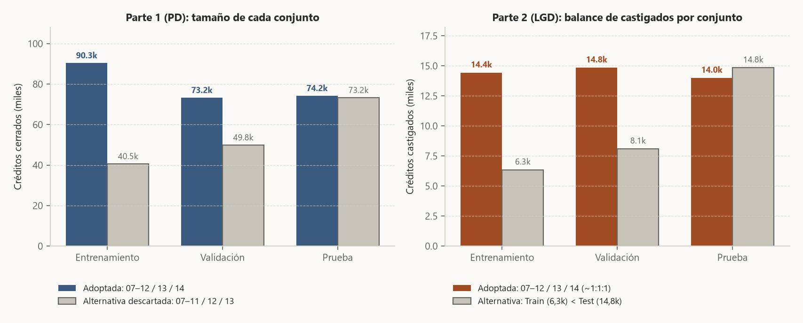
El conteo definitivo de créditos por partición temporal y registros excluidos se consolida en la Tabla 6.
| Conjunto | Años | Créditos (PD) |
% malos |
Castigados (LGD) |
Censura (NA) |
|---|---|---|---|---|---|
| Entrenamiento | 2007–2012 | 90 347 | 16,30 % | 14 419 | 5,79 % |
| Validación | 2013 | 73 194 | 22,95 % | 14 836 | 45,68 % |
| Prueba | 2014 | 74 154 | 26,22 % | 13 981 | 68,53 % |
| Excluido* | 2015 | 30 835* | 25,46 %* | 2 773* | 92,68 % |
Marco teórico
Fundamentos matemáticos de redes neuronales, optimización, métricas y scorecard
En esta sección se presentan de manera general y simbólica los fundamentos matemáticos de los modelos supervisados de aprendizaje profundo, las funciones de pérdida derivadas por máxima verosimilitud, el algoritmo de retropropagación junto con las reglas de optimización, las técnicas de regularización, las métricas de evaluación y la derivación de una escala scorecard.
Neurona artificial, perceptrón multicapa y funciones de activación
Siguiendo los fundamentos de redes neuronales desarrollados en el curso (Ospina Arango, 2026), una neurona artificial recibe un vector de entrada \(\mathbf{x} \in \mathbb{R}^{d}\), calcula una combinación afín parametrizada por un vector de pesos \(\mathbf{w} \in \mathbb{R}^{d}\) y un sesgo escalar \(b \in \mathbb{R}\), y aplica una función de activación no lineal \(\phi(\cdot)\) sobre el potencial de activación \(z\), tal como se formula en la Ecuación 2:
Un perceptrón multicapa (MLP) apila \(L\) capas totalmente conectadas de neuronas en cascada. Tomando como capa de entrada \(\mathbf{h}^{(0)} = \mathbf{x} \in \mathbb{R}^{d}\) (con \(n_0 = d\)), cada capa oculta \(\ell \in \{1, \dots, L-1\}\) de ancho \(n_\ell\) proyecta las activaciones previas mediante una matriz de pesos \(\mathbf{W}^{(\ell)} \in \mathbb{R}^{n_\ell \times n_{\ell-1}}\) y un vector de sesgos \(\mathbf{b}^{(\ell)} \in \mathbb{R}^{n_\ell}\). La capa de salida entrega un logit escalar \(z^{(L)} = \mathbf{w}^{(L)\top}\mathbf{h}^{(L-1)} + b^{(L)}\) que se mapea al intervalo \((0, 1)\) mediante la función sigmoide \(\sigma(\cdot)\), según describe la Ecuación 3:
El número total de parámetros entrenables en un MLP de \(L\) capas es
\(\sum_{\ell=1}^{L}(n_{\ell-1} + 1)n_\ell\). Las funciones de activación consideradas —ReLU,
tanh y ELU (con parámetro de escala \(\alpha > 0\)) en las capas ocultas, junto
con la función sigmoide en la capa de salida— y sus respectivas derivadas se formalizan en la
Ecuación 4:
Derivación de las funciones de pérdida por máxima verosimilitud
Sea \(\mathcal{D} = \{(\mathbf{x}_i, y_i)\}_{i=1}^{N}\) un conjunto de \(N\) observaciones condicionalmente independientes dados los atributos \(\mathbf{x}_i\) y el vector de parámetros \(\boldsymbol{\theta} = \{\mathbf{W}^{(\ell)}, \mathbf{b}^{(\ell)}\}_{\ell=1}^{L}\). Al modelar una respuesta binaria \(Y_i \mid \mathbf{x}_i \sim \text{Bernoulli}(\hat{y}_i)\) con \(\hat{y}_i = \sigma(z_i(\mathbf{x}_i; \boldsymbol{\theta}))\), la función de masa es \(P(y_i \mid \mathbf{x}_i; \boldsymbol{\theta}) = \hat{y}_i^{y_i}(1 - \hat{y}_i)^{1 - y_i}\). Tomando el logaritmo natural sobre la verosimilitud conjunta \(\prod_{i=1}^{N} P(y_i \mid \mathbf{x}_i; \boldsymbol{\theta})\), se obtiene la log-verosimilitud presentada en la Ecuación 5:
Maximizar \(\ell(\boldsymbol{\theta})\) equivale exactamente a minimizar el promedio de su negativo, lo que da lugar a la función de pérdida de entropía cruzada binaria (BCE) o log-loss, base tanto de la regresión logística como de las redes neuronales de clasificación binaria (Ospina Arango, 2026). Al sustituir \(\hat{y}_i = (1 + e^{-z_i})^{-1}\) directamente en términos del logit \(z_i\), se obtiene su forma numéricamente estable formulada en la Ecuación 6:
Cuando la respuesta observada corresponde a una proporción acotada \(y_i \in [0, 1]\) con posible masa en los extremos, el enfoque de cuasi-verosimilitud fraccional (fractional logit; Papke y Wooldridge, 1996) demuestra que la función objetivo de la Ecuación 6 permanece bien definida para todo \(y_i \in [0, 1]\), admite valores exactos en \(0\) o \(1\) sin divergencias logarítmicas y garantiza que la condición de primer orden recupere la esperanza condicional \(\mathbb{E}[Y \mid \mathbf{x}] = \sigma(z(\mathbf{x}))\).
De manera análoga, si la variable objetivo continua \(Y_i \in \mathbb{R}\) se modela bajo un supuesto gaussiano homocedástico \(Y_i \mid \mathbf{x}_i \sim \mathcal{N}\bigl(\hat{y}_i(\mathbf{x}_i; \boldsymbol{\theta}), \sigma_\varepsilon^2\bigr)\) con varianza constante \(\sigma_\varepsilon^2 > 0\), su función de densidad es \(f(y_i \mid \mathbf{x}_i; \boldsymbol{\theta}) = (2\pi\sigma_\varepsilon^2)^{-1/2} \exp\bigl(-(y_i - \hat{y}_i)^2 / (2\sigma_\varepsilon^2)\bigr)\). La log-verosimilitud conjunta adopta la forma de la Ecuación 7:
Dado que el primer término y el factor positivo \(1/(2\sigma_\varepsilon^2)\) no dependen de \(\boldsymbol{\theta}\), maximizar la log-verosimilitud gaussiana equivale a minimizar el error cuadrático medio (MSE) definido en la Ecuación 8, aplicable tanto a la regresión lineal por mínimos cuadrados como a las redes neuronales de regresión (Ospina Arango, 2026):
Algoritmo de retropropagación y ecuaciones de los optimizadores
Para calcular el gradiente \(\nabla_{\boldsymbol{\theta}} \mathcal{L}\) sobre un mini-lote \(\mathcal{B}_t\) de tamaño \(m\), el algoritmo de retropropagación (backpropagation) define la sensibilidad local de cada capa respecto al potencial previo a la activación como \(\boldsymbol{\delta}_i^{(\ell)} = \partial \mathcal{L}_i / \partial \mathbf{z}_i^{(\ell)}\). En la capa de salida escalar (\(n_L = 1\)), al combinar activación sigmoide con la pérdida BCE de la Ecuación 6 el término de derivada sigmoide se cancela y resulta \(\delta_i^{(L)} = \hat{y}_i - y_i\); cuando se emplea MSE (Ecuación 8) con salida sigmoide, la regla de la cadena arroja \(\delta_i^{(L)} = 2(\hat{y}_i - y_i)\hat{y}_i(1 - \hat{y}_i)\). Propagando hacia atrás desde \(\ell = L - 1\) hasta \(\ell = 1\) mediante el producto elemento a elemento \(\odot\), se obtienen la recurrencia y los gradientes promediados del mini-lote reunidos en la Ecuación 9:
Sea \(\mathbf{g}_t = \nabla_{\boldsymbol{\theta}}\mathcal{L}_{\mathcal{B}_t}(\boldsymbol{\theta}_{t-1}) + \lambda\boldsymbol{\theta}_{t-1}\) el gradiente en la iteración \(t\) incorporando la penalización \(L_2\) de intensidad \(\lambda \ge 0\), y sea \(\eta > 0\) la tasa de aprendizaje. El optimizador de descenso de gradiente estocástico (SGD) con momento (\(\mu \in [0, 1)\)) acumula un vector de velocidad \(\mathbf{v}_t\) (con \(\mathbf{v}_0 = \mathbf{0}\)) para amortiguar oscilaciones en direcciones de alta curvatura y acelerar el avance en direcciones consistentes según la Ecuación 10:
Por su parte, el optimizador Adam (Kingma y Ba, 2015) mantiene estimaciones adaptativas de primer y segundo momento del gradiente (\(\mathbf{m}_t\) y \(\mathbf{u}_t\), inicializadas en \(\mathbf{0}\) con tasas de decaimiento exponencial \(\beta_1, \beta_2 \in [0, 1)\) y constante de estabilidad numérica \(\epsilon > 0\)) corregidas por sesgo de arranque, aplicando las reglas de actualización de la Ecuación 11:
Técnicas de regularización
Para limitar la complejidad efectiva del modelo y prevenir el sobreajuste frente al ruido muestral, se emplean tres mecanismos complementarios de regularización:
1. Penalización \(L_2\) (weight decay): agrega un término cuadrático sobre la norma euclidiana de los parámetros a la función de pérdida con coeficiente \(\lambda \ge 0\), tal como indica la Ecuación 12. En su formulación clásica sobre el gradiente, añade \(\lambda\boldsymbol{\theta}\) al vector \(\mathbf{g}_t\) (equivalente en modelos lineales regularizados a controlar la fuerza inversa \(C = 1/\lambda\)):
2. Dropout invertido: durante cada paso de entrenamiento, cada unidad de las capas ocultas se desactiva aleatoriamente con probabilidad \(p_{\text{drop}} \in [0, 1)\) y las activaciones retenidas se escalan por \((1 - p_{\text{drop}})^{-1}\) según la Ecuación 13. Esto reduce la coadaptación entre unidades y preserva el valor esperado \(\mathbb{E}[\tilde{\mathbf{h}}^{(\ell)}] = \mathbf{h}^{(\ell)}\), de modo que en fase de inferencia el mecanismo se desactiva sin requerir reescalado adicional:
3. Parada temprana (early stopping): al finalizar cada época \(e\), se mide la pérdida sobre un conjunto independiente de validación, \(\mathcal{L}_{\text{val}}(e)\). Si transcurren \(P \in \mathbb{N}\) épocas consecutivas (paciencia) sin una mejora superior a una tolerancia \(\delta \ge 0\), el entrenamiento se detiene en la época \(E_{\text{det}}\) y se restauran los pesos correspondientes al mínimo observado \(e^*\) conforme a la Ecuación 14:
Definición de las métricas de evaluación
De acuerdo con los criterios de evaluación trabajados en la asignatura (Ospina Arango, 2026), la evaluación cuantitativa distingue entre la capacidad de ordenamiento relativo en clasificación binaria (discriminación), la consistencia probabilística (calibración) y los errores de magnitud en variables continuas (regresión):
Discriminación binaria (AUC-ROC, Gini y KS): para cualquier umbral de decisión \(\tau \in [0, 1]\), sean \(\text{TPR}(\tau)\) y \(\text{FPR}(\tau)\) la tasa de verdaderos positivos y la tasa de falsos positivos. El área bajo la curva ROC (\(\text{AUC}\)) mide la probabilidad de asignar un puntaje mayor a una observación positiva \(X^+\) elegida al azar que a una negativa \(X^-\), mientras que el índice de Gini reescala linealmente dicha área al intervalo \([-1, 1]\), como muestra la Ecuación 15:
Complementariamente, el estadístico de Kolmogorov–Smirnov (KS) cuantifica la máxima distancia vertical entre las funciones de distribución acumulada empíricas de las probabilidades predichas para la clase negativa (\(F_0(\tau) = 1 - \text{FPR}(\tau)\)) y la clase positiva (\(F_1(\tau) = 1 - \text{TPR}(\tau)\)), según se expresa en la Ecuación 16:
Calibración probabilística (Log-Loss, Brier y ECE): además de la entropía cruzada binaria (log-loss) definida en la Ecuación 6, se evalúan el puntaje de Brier (error cuadrático medio sobre probabilidades predichas \(\hat{p}_i\) frente a desenlaces \(y_i \in \{0, 1\}\)) y el error de calibración esperado (ECE) tras particionar las \(N\) predicciones ordenadas en \(K\) cuantiles de tamaño \(n_k\) con frecuencia empírica observada \(\bar{y}_k\) y probabilidad media predicha \(\bar{p}_k\), de acuerdo con la Ecuación 17:
Métricas de regresión (MAE y RMSE): para respuestas continuas \(y_i\) y predicciones \(\hat{y}_i\), se emplean el error absoluto medio (MAE) y la raíz del error cuadrático medio (RMSE) definidos en la Ecuación 18. Desde el punto de vista teórico, la constante óptima que minimiza el MAE es la mediana de la distribución objetivo, mientras que la constante que minimiza el RMSE es la media:
Derivación de la Scorecard
Un modelo probabilístico produce una probabilidad estimada del evento \(p = P(Y = 1 \mid \mathbf{x}) \in (0, 1)\), donde valores mayores indican mayor propensión al evento. Trabajar directamente con \(p\) presenta dos limitaciones operativas: su sentido es inverso al de una calificación de calidad tradicional (donde un número más alto es favorable) y su escala se comprime en los extremos, pues variaciones numéricas idénticas cerca de \(0\) o de \(1\) representan cambios proporcionales muy distintos en el riesgo relativo. El objetivo de la scorecard (Siddiqi, 2017) es construir una transformación monótona \(\text{Puntaje}(p)\) que: (i) invierta el sentido sin alterar el ordenamiento relativo de las observaciones; (ii) convierta cada reducción multiplicativa constante en la razón de riesgo en una suma fija de puntos; (iii) permita anclar la escala a referencias elegidas por diseño; y (iv) habilite una descomposición aditiva por variable en modelos lineales generalizados.
Paso 1 (De probabilidad a log-odds complementarias): Definimos las odds del resultado favorable (\(Y = 0\)) frente al evento (\(Y = 1\)) como \(\theta(p) = (1 - p)/p \in (0, +\infty)\). Cuando \(p\) disminuye, \(\theta(p)\) aumenta. Para lograr que duplicar las odds (\(\theta \mapsto 2\theta\)) equivalga siempre a sumar una cantidad constante de puntos, se aplica el logaritmo natural —que transforma productos en sumas mediante \(\ln(2\theta) = \ln\theta + \ln 2\)— y se define una relación lineal \(\text{Puntaje}(p) = A + B\ln\theta(p)\) con pendiente \(B > 0\) y desplazamiento \(A \in \mathbb{R}\).
Paso 2 (Condiciones de diseño y despeje de las constantes \(A\) y \(B\)): Para fijar de forma única \(A\) y \(B\), se imponen dos condiciones sobre la escala: primero, asignar un puntaje base \(P_0\) a unas odds de referencia \(\theta_0 > 0\), es decir, \(P_0 = A + B\ln\theta_0\); segundo, establecer un incremento constante de \(\text{PDO} > 0\) puntos (Points to Double the Odds) por cada duplicación de \(\theta\), esto es, \(P_0 + \text{PDO} = A + B\ln(2\theta_0)\). Restando la primera igualdad de la segunda se cancelan \(P_0\), \(A\) y \(\theta_0\): \(\text{PDO} = B\bigl[\ln(2\theta_0) - \ln\theta_0\bigr] = B\ln\!\bigl((2\theta_0)/\theta_0\bigr) = B\ln 2\), lo cual demuestra que el paso de \(+\text{PDO}\) puntos por duplicación se cumple en toda la escala. De ambas relaciones resultan las constantes de la Ecuación 19:
Paso 3 (Fórmula general e invariancia de discriminación): Al sustituir \(A\) y \(B\) en \(\text{Puntaje}(p) = A + B\ln\bigl((1 - p)/p\bigr)\), se deduce la expresión cerrada presentada en la Ecuación 20. Como esta transformación es estrictamente decreciente respecto a \(p\), preserva exactamente el ordenamiento de cualquier par de observaciones y deja invariantes todas las métricas basadas en rangos u orden (como AUC, índice de Gini y estadístico KS):
Paso 4 (Descomposición aditiva en regresión logística frente a MLP): Cuando la probabilidad proviene de una regresión logística con predictor lineal \(\ln\bigl(p/(1 - p)\bigr) = \beta_0 + \sum_{j=1}^{d}\beta_j x_j\), invertir el argumento del logaritmo cambia el signo: \(\ln\bigl((1 - p)/p\bigr) = -\ln\bigl(p/(1 - p)\bigr) = -\beta_0 - \sum_{j=1}^{d}\beta_j x_j\). Sustituyendo en la Ecuación 20 se obtiene la suma aditiva exacta de la Ecuación 21, donde \((A - B\beta_0)\) actúa como puntaje base del modelo y cada término \((-B\beta_j x_j)\) cuantifica el aporte puntual de la característica \(j\) (restando puntos cuando \(\beta_j > 0\) y sumando cuando \(\beta_j < 0\)). En un perceptrón multicapa de salida logit \(z^{(L)}\), la transformación directa sigue cumpliendo \(\text{Puntaje}(\mathbf{x}) = A - B\,z^{(L)}\), pero las capas ocultas acoplan las entradas de manera no lineal e impiden separar el puntaje en contribuciones fijas independientes por variable:
Probabilidad de incumplimiento
Parte 1 · Clasificación binaria
Se modela \(P(Y = 1 \mid X)\), la probabilidad de que un crédito sea malo, con una regresión logística como referencia y un perceptrón multicapa (MLP).
Análisis descriptivo e hipótesis
Antes de ajustar modelos, se exploró el conjunto de entrenamiento crudo con desenlace conocido (2007–2012, 90 347 créditos: 75 618 buenos y 14 729 malos; tasa base de incumplimiento: 16,30 %) sin tocar validación (2013) ni prueba (2014). Sobre ese universo se formularon y contrastaron cinco hipótesis explícitas acerca de qué perfiles presentan mayor riesgo de impago, verificadas directamente mediante las tasas observadas y las gráficas exploratorias.
\(H_1\) · Calificación de riesgo y tasa de interés (grade, int_rate) Confirmada
Hipótesis: la probabilidad de incumplimiento crece de forma estrictamente monótona a medida que
empeora el grado asignado por Lending Club (A \(\rightarrow\) G) y aumenta la tasa
de interés. En los datos (Figura 5), la mora sube sin
excepciones
desde
6,66 % en grado A (\(n = 20\,935\), tasa media 7,48 %) hasta
40,15 % en grado G (\(n = 680\), tasa media 21,55 %); por rangos de tasa pasa
de 6,00 % (\(< 8\,\%\)) a 39,65 % (\(\ge 20\,\%\)). Es la señal
individual más potente del conjunto.

\(H_2\) · Capacidad de pago y carga financiera (dti, annual_inc) Confirmada
Hipótesis: mayor relación deuda/ingreso (dti) y menores ingresos anuales
(annual_inc) elevan el riesgo de impago por menor holgura de caja. Como muestra la Figura 6, la tasa de malos crece de forma sostenida desde
13,55 % cuando dti < 10 % (\(n = 24\,296\)) hasta 22,27 %
cuando dti ≥ 30 % (\(n = 2\,232\)), mientras que por quintiles de ingreso desciende
continuamente desde 18,99 % en el quintil inferior (Q1: US$ 2k–38k) hasta
12,30 % en el superior (Q5: US$ 90k–7,14M).

\(H_3\) · Estrés de liquidez rotativa y alertas del buró (revol_util,
inq_last_6mths, delinq_2yrs, pub_rec) Confirmada
Hipótesis: una utilización cercana al límite en tarjetas rotativas, múltiples consultas recientes
al buró o incidentes adversos previos incrementan el incumplimiento. En la Figura 7, revol_util duplica la tasa de malos al pasar de
11,08 % (\(< 25\,\%\)) a 22,36 % (\(\ge 90\,\%\)); las consultas
recientes suben de 13,54 % (0) a 23,26 % (3+); las moras previas pasan de
16,10 % a 18,18 % (2+); y los registros públicos adversos saltan de
16,02 % a 23,06 %.
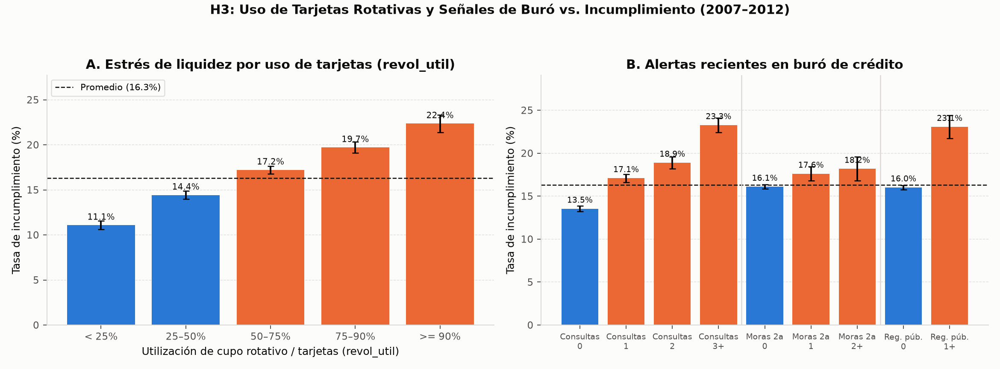
\(H_4\) · Condiciones del contrato: plazo y propósito (plazo_meses, purpose)
Confirmada
Hipótesis: los préstamos a 60 meses son sustancialmente más riesgosos que los de 36 meses (incluso
controlando por censura) y destinos empresariales fallan más que préstamos de consumo específicos. En todo
entrenamiento (Figura 8), 60 meses registra
31,95 % frente a 13,09 % en 36 meses; al controlar por censura en la
cohorte 2010 (donde ambos plazos completaron su ciclo), la brecha real se mantiene clara:
22,51 % vs. 10,92 %. Por destino, small_business lidera el
riesgo con 28,02 % (\(n = 3\,166\)), frente a car (11,41 %),
major_purchase (11,53 %) y credit_card (12,46 %).
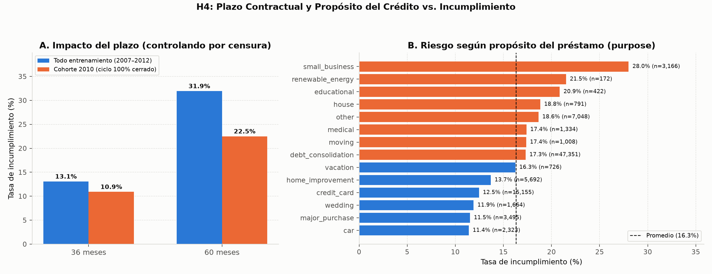
\(H_5\) (Contraste) · Verificación de ingresos, antigüedad laboral y vivienda Refutada parcialmente
Hipótesis intuitiva: ingresos verificados, mayor antigüedad laboral y vivienda propia o hipotecada
deberían reducir el incumplimiento. Sin embargo, los datos (Figura
9)
muestran dos hallazgos contra-intuitivos clave: primero,
Verified presenta mayor mora (19,42 %) que Not Verified
(13,70 %), lo que refleja sesgo de selección en verificación (la plataforma audita
con mayor frecuencia montos altos o perfiles percibidos como más riesgosos); segundo, la antigüedad laboral
no
reduce el riesgo de forma monótona (< 1 año: 15,81 % frente a 10+ años: 16,93
%),
pero el grupo Sin dato (\(n = 2\,897\)) salta a 21,33 %, validando el valor
informativo de registrar el dato faltante. Solo en vivienda se observa la tendencia esperada:
MORTGAGE (15,40 %) es menor que RENT (17,07 %).

La síntesis de los veredictos empíricos para las cinco hipótesis de riesgo se presenta en la Tabla 7.
| Hipótesis | Variables | Evidencia empírica principal | Veredicto |
|---|---|---|---|
| \(H_1\) (Calificación de riesgo y tasa de interés) |
grade, int_rate |
A: 6,66 % \(\rightarrow\) G: 40,15 %; tasa <8 %: 6,00 %
\(\rightarrow\) ≥20 %: 39,65 %. |
Confirmada |
| \(H_2\) (Capacidad de pago y carga financiera) |
dti, annual_inc |
DTI: 13,55 % \(\rightarrow\) 22,27 %; ingreso: Q1 18,99 % \(\rightarrow\) Q5 12,30 %. | Confirmada |
| \(H_3\) (Estrés de liquidez rotativa y alertas del buró) |
revol_util, inq_last_6mths, delinq_2yrs,
pub_rec
|
revol_util ≥90 %: 22,36 %; 3+ consultas: 23,26 %;
pub_rec 1+: 23,06 %.
|
Confirmada |
| \(H_4\) (Condiciones del contrato: plazo y propósito) |
plazo_meses, purpose |
Cohorte madura 2010: 36m 10,92 % vs. 60m 22,51 %; small_business: 28,02
%. |
Confirmada |
| \(H_5\) (Verificación de ingresos, antigüedad laboral y vivienda) |
verification_status, antiguedad_,
home_ownership
|
Paradoja Verified (19,42 % > 13,70 %); empleo plano salvo
Sin dato (21,33 %); MORTGAGE 15,40 %.
|
Refutada parc. |
Modelos y presupuesto de búsqueda
Para establecer una referencia rigurosa y cumplir con la regla de comparación justa del enunciado, se entrenaron dos familias de modelos sobre exactamente las mismas 54 columnas preprocesadas de entrenamiento (\(n = 90\,347\)), seleccionando cualquier hiperparámetro exclusivamente por su área bajo la curva ROC (AUC) en el conjunto de validación temporal de 2013 (\(n = 73\,194\)):
- Regresión logística con regularización \(L_2\): modelo lineal generalizado con enlace logit (Ospina Arango, 2026; \(54\) pesos y \(1\) intercepto: 55 parámetros entrenables). Se evaluó una rejilla explícita de 7 configuraciones del parámetro de regularización inversa \(C \in \{0,001;\; 0,01;\; 0,05;\; 0,1;\; 0,5;\; 1,0;\; 10,0\}\) con el optimizador L-BFGS en un tiempo total de 5,49 s. La configuración ganadora en validación fue \(C = 0,01\) (\(\text{AUC}_{\text{val}} = 0,6821\), intercepto \(\beta_0 = -1,6872\), ajuste individual en \(0,65\text{ s}\)), evidenciando que una regularización \(L_2\) moderadamente fuerte controla la colinealidad entre variables de monto, cuota, grado y tasa de interés.
- Perceptrón multicapa (MLP) en PyTorch: red neuronal prealimentada entrenada con
entropía cruzada binaria sobre logits (
BCEWithLogitsLoss) y parada temprana (paciencia = 10épocas sin mejora en el AUC de validación, hasta un máximo de 100 épocas por corrida). Se ejecutó una búsqueda aleatoria con presupuesto fijo de 30 configuraciones y, fijada la arquitectura ganadora, se reentrenó desde cero con 30 semillas independientes (1 a 30) para cuantificar la variabilidad por inicialización de pesos y barajado de minilotes.
Regresión logística (\(L_2, C = 0,01\))
- Parámetros
- 55
- Configuraciones
- 7 (rejilla explícita de \(C\))
- Tiempo de búsqueda
- 5,5 s (0,65 s mejor modelo)
- AUC en prueba (2014)
- 0,6820 (Gini: 0,3640 · KS: 26,51 %)
MLP final (54–64–1, ReLU, SGD)
- Parámetros
- 3 585
- Configuraciones
- 30 (búsqueda aleatoria: 817,5 s)
- 30 semillas
- 474,5 s · AUC prueba: 0,6875 ± 0,0025
- AUC en prueba (mejor val.)
- 0,6902 (Gini: 0,3804 · KS: 27,73 %)
Búsqueda de hiperparámetros y 30 semillas
La búsqueda aleatoria del MLP exploró 30 configuraciones muestreadas con semilla fija
(2026) en un tiempo total de 817,46 s (13,6 min), seleccionando la mejor
arquitectura según el AUC en validación (2013). El espacio de hiperparámetros explorado se resume en la
Tabla 8.
| Hiperparámetro | Muestreo | Valores o rango explorado |
|---|---|---|
| Arquitectura (capas ocultas) |
Discreto uniforme | [16], [32], [64], [32, 16],[64, 32], [128, 64], [64, 32, 16](\(897\) a \(15\,361\) parámetros) |
| Función de activación | Discreto uniforme | ReLU, tanh, ELU |
| Tasa de dropout | Discreto uniforme | \(\{0,0;\; 0,1;\; 0,2;\; 0,3\}\) |
| Optimizador | Discreto uniforme | Adam, SGD |
| Tasa de aprendizaje | Log-uniforme | \([10^{-4},\; 10^{-2}]\) |
| Penalización \(L_2\) (weight decay) |
Log-uniforme | \([10^{-6},\; 10^{-2}]\) |
| Tamaño de lote | Discreto uniforme | \(\{128,\; 256,\; 512\}\) créditos |
La configuración ganadora fue la #15 (\(\text{AUC}_{\text{val}} = 0,6888\)), cuyas especificaciones se detallan en la Tabla 9. Como se aprecia en los resultados de la búsqueda (Figura 10), las arquitecturas de capacidad intermedia (\(1\,793\) a \(5\,633\) parámetros) dominan el frente de validación: redes más anchas como \([128, 64]\) (\(15\,361\) parámetros) memorizan más rápido el conjunto de entrenamiento sin superar en validación a una capa oculta bien regularizada mediante parada temprana.
| Hiperparámetro | Valor seleccionado (configuración #15) |
|---|---|
| Arquitectura (entrada · oculta · salida) |
54 · 64 · 1 (3 585 parámetros entrenables) |
| Función de activación | ReLU |
| Dropout | 0,0 |
| Función de pérdida | Entropía cruzada binaria ( BCEWithLogitsLoss) |
| Optimizador | SGD |
| Tasa de aprendizaje | 0,00954 (\(9,54 \times 10^{-3}\)) |
| Penalización \(L_2\) (weight decay) |
\(1,72 \times 10^{-6}\) |
| Tamaño de lote y parada temprana |
128 créditos · máx. 100 épocas (paciencia = 10 épocas sobre \(\text{AUC}_{\text{val}}\)) |
La relación entre complejidad y desempeño en validación de las 30 configuraciones evaluadas se puede observar en la Figura 10.

A su vez, la evolución de la entropía cruzada binaria por época del modelo seleccionado y el punto de parada temprana en validación se muestran en la Figura 11.

Fijada la arquitectura #15, se entrenaron 30 semillas independientes (semillas 1 a 30, en 474,48 s totales, equivalentes a \(15,8\text{ s}\) por corrida). La Tabla 10 resume la distribución completa de resultados. La variabilidad entre semillas es muy baja (desviación estándar de \(0,0021\) en el AUC de validación y \(0,0025\) en el AUC de prueba). Más importante aún: incluso la peor de las 30 semillas del MLP en prueba (\(\text{AUC} = 0,6822\)) supera a la regresión logística optimizada (\(\text{AUC} = 0,6820\)), lo que demuestra que la ganancia de la red neuronal no es producto de una semilla afortunada, aún asi, la diferencia entre la regresión logistica y la neurona es casi imperceptible, lo que nos da una pista de porque una red neuronal no es adecuada para este tipo de problemas. Siguiendo el protocolo sin fuga hacia prueba, se guardó como modelo final la semilla 17 por haber obtenido el mayor AUC en validación (\(\text{AUC}_{\text{val}} = 0,6901\)).
| Métrica | Media | Desv. est. |
Mínimo | Máximo |
|---|---|---|---|---|
| Entrenamiento (2007–2012) | ||||
| AUC | 0,7196 | 0,0044 | 0,7110 | 0,7275 |
| Gini | 0,4391 | 0,0088 | 0,4220 | 0,4549 |
| KS | 0,3180 | 0,0067 | 0,3056 | 0,3288 |
| Brier | 0,1235 | 0,0006 | 0,1224 | 0,1248 |
| Log-Loss | 0,4009 | 0,0021 | 0,3970 | 0,4054 |
| Validación (2013) | ||||
| AUC | 0,6871 | 0,0021 | 0,6826 | 0,6901 |
| Gini | 0,3741 | 0,0041 | 0,3651 | 0,3802 |
| KS | 0,2712 | 0,0036 | 0,2646 | 0,2785 |
| Brier | 0,1645 | 0,0003 | 0,1635 | 0,1650 |
| Log-Loss | 0,5039 | 0,0009 | 0,5006 | 0,5050 |
| Prueba (2014) | ||||
| AUC | 0,6875 | 0,0025 | 0,6822 | 0,6905 |
| Gini | 0,3749 | 0,0049 | 0,3643 | 0,3811 |
| KS | 0,2744 | 0,0042 | 0,2657 | 0,2808 |
| Brier | 0,1806 | 0,0006 | 0,1792 | 0,1816 |
| Log-Loss | 0,5439 | 0,0018 | 0,5396 | 0,5470 |
Evaluación: discriminación y calibración
En el conjunto de prueba de 2014 (\(n = 74\,154\), tasa observada de incumplimiento de \(26,22\,\%\)), el MLP supera de forma simultánea a la regresión logística en todas las métricas de discriminación y de calibración probabilística. En discriminación, el MLP final eleva el AUC de 0,6820 a 0,6902 (\(+0,0082\); media de 30 semillas: \(0,6875\)), el índice de Gini de 0,3640 a 0,3804 (\(+0,0164\)) y el estadístico KS de 26,51 % a 27,73 % (\(+1,23\) puntos porcentuales; \(+0,0123\) en escala \([0, 1]\) sin redondeo). La separación máxima entre las funciones de distribución acumulada de buenos pagadores \(F_{\text{buenos}}(p)\) e incumplidos \(F_{\text{malos}}(p)\) se alcanza en el umbral óptimo \(p^* = 0,200\), punto que permite fijar un corte operativo de admisión con máxima distancia entre ambas poblaciones. El conjunto completo de métricas de discriminación y calibración en validación y prueba se reporta en la Tabla 11.
| Modelo | Conjunto | PD media |
AUC | Gini | KS | Brier | ECE |
|---|---|---|---|---|---|---|---|
| Reg. logística (\(C=0,01\)) |
Validación | 0,1933 | 0,6821 | 0,3641 | 0,2665 | 0,1661 | 0,0417 |
| MLP (30 semillas) |
Validación | 0,2031 | 0,6871 | 0,3741 | 0,2712 | 0,1645 | — |
| MLP final (sem. 17) |
Validación | 0,2100 | 0,6901 | 0,3802 | 0,2785 | 0,1635 | 0,0264 |
| Reg. logística (\(C=0,01\)) |
Prueba | 0,1977 | 0,6820 | 0,3640 | 0,2651 | 0,1831 | 0,0645 |
| MLP (30 semillas) |
Prueba | 0,2086 | 0,6875 | 0,3749 | 0,2744 | 0,1806 | — |
| MLP final (sem. 17) |
Prueba | 0,2152 | 0,6902 | 0,3804 | 0,2773 | 0,1792 | 0,0474 |
La comparación de la capacidad discriminante mediante las curvas ROC en el conjunto de prueba se puede observar en la Figura 12.
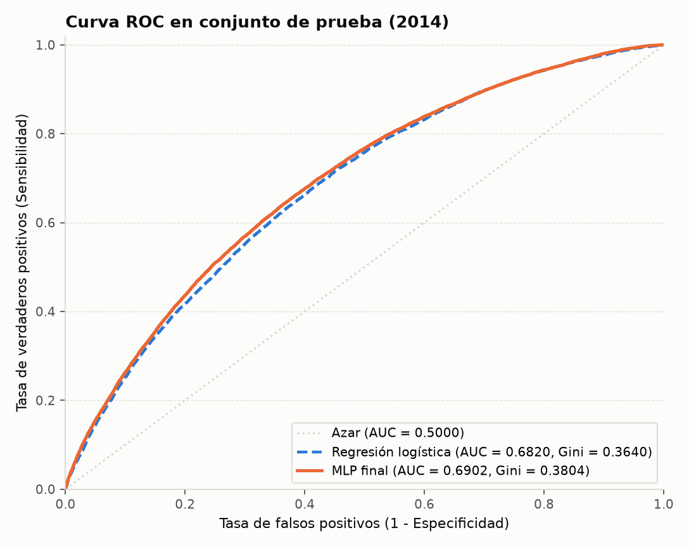
Por su parte, la separación acumulada entre buenos pagadores e incumplidos y el punto de máxima distancia KS en prueba se muestran en la Figura 13.

En calibración por deciles, ambos modelos ordenan de manera estrictamente monótona el riesgo real desde el primer hasta el décimo decil (en el MLP de prueba, la tasa observada sube de \(7,58\,\%\) en el decil 1 a \(50,39\,\%\) en el decil 10). No obstante, el MLP logra un puntaje de Brier menor (0,1792 frente a 0,1831) y reduce el error de calibración esperado (ECE) de 6,45 % a 4,74 % en prueba (y de 4,17 % a 2,64 % en validación). Esto ocurre porque el MLP captura mejor el cambio de composición hacia préstamos de 60 meses y tasas más altas en 2013–2014, prediciendo una PD media de \(21,52\,\%\) en prueba frente a \(19,77\,\%\) de la regresión logística. La brecha vertical remanente frente a la diagonal \(y = x\) en 2014 (\(26,22\,\%\) observado frente a \(21,52\,\%\) predicho) corresponde exactamente al sesgo de censura por maduración documentado en la Sección 3.3, donde los créditos sanos de 60 meses originados en 2014 seguían vigentes (Current) al corte del archivo. El comportamiento de calibración por deciles en validación y prueba se puede observar en la Figura 14.

Scorecard
La scorecard crediticia traduce la probabilidad de incumplimiento estimada \(p = \widehat{\text{PD}}\) a una escala entera de puntos donde un mayor puntaje representa menor riesgo (mayores odds de ser buen pagador, \(\theta = (1 - p)/p\)). Siguiendo el estándar de la industria bancaria (Siddiqi, 2017), se fijaron tres parámetros de diseño de escala que no son estimados por el modelo sino definidos por convención de negocio, de modo que modificarlos reescala los puntajes sin alterar el AUC, el Gini, el KS ni las tasas observadas por decil:
- Puntaje base \(P_0 = 600\text{ puntos}\): punto de anclaje convencional en escalas crediticias (tipo 300–850) que sitúa los resultados en centenas positivas cómodas, con margen suficiente hacia abajo para perfiles de alto riesgo y hacia arriba para clientes de bajo riesgo.
- Odds de referencia \(\theta_0 = 19{:}1\): fija qué perfil recibe exactamente \(600\) puntos (\(19\) buenos pagadores por cada \(1\) incumplido, equivalente a \(p_0 = 1/(1 + 19) = 5,0\,\%\)). Los créditos con \(\widehat{\text{PD}} > 5,0\,\%\) quedan por debajo de \(600\), mientras que los más seguros superan ese umbral.
- Puntos para duplicar las odds (\(\text{PDO} = 20\)): cada \(20\) puntos adicionales duplican las odds de cumplimiento y reducen a la mitad el riesgo relativo (\(560\text{ pts} \rightarrow 4{,}75{:}1\);\; \(580\text{ pts} \rightarrow 9{,}5{:}1\);\; \(600\text{ pts} \rightarrow 19{:}1\);\; \(620\text{ pts} \rightarrow 38{:}1\);\; \(640\text{ pts} \rightarrow 76{:}1\)), distribuyendo la cartera de prueba en un rango compacto y legible (\(450,9\) a \(649,6\) puntos).
Aplicando la derivación teórica de la Ecuación 19 y la Ecuación 20 con estos tres parámetros, se obtiene la ecuación operativa de la Ecuación 22 con constantes \(B = \text{PDO}/\ln 2 = 28,8539\) y \(A = P_0 - B\ln\theta_0 = 515,0414\):
¿Cómo se obtienen los puntos a partir de cada modelo? En la regresión logística, al aplicar la descomposición de la Ecuación 21 sobre el intercepto \(\beta_0 = -1,6872\) y las \(54\) columnas transformadas, el puntaje equivale exactamente a partir de un puntaje base aditivo \(A - B\beta_0 = 563,72\) y sumar o restar el aporte individual \(-B\beta_j x_j\) de cada característica según la Ecuación 23 (las variables con \(\beta_j < 0\) protegen y suman puntos; las de \(\beta_j > 0\) elevan el riesgo y restan puntos):
En los \(74\,154\) créditos de prueba, la diferencia numérica máxima entre sumar la tabla aditiva por variable y evaluar directamente la Ecuación 22 es de apenas \(2,27 \times 10^{-13}\text{ puntos}\) (precisión de máquina). En el MLP final, como la capa oculta con activación ReLU combina de manera no lineal todas las variables, el modelo no admite una suma fija independiente por atributo; por ello, el puntaje se obtiene evaluando primero la probabilidad predicha \(p = \widehat{\text{PD}}_{\text{MLP}}(\mathbf{x})\) (equivalente a \(A - B\,z^{(L)}\) sobre su logit de salida) y aplicando la Ecuación 22. En prueba (2014), esta transformación produce una media global de \(558,38 \pm 25,91\text{ puntos}\) y separa la mediana de los buenos pagadores (\(562,69\text{ puntos}\)) de la mediana de los incumplidos (\(545,20\text{ puntos}\)) por \(17,49\text{ puntos}\) (casi un PDO completo). La distribución de puntajes de la scorecard y la tasa de incumplimiento observada por decil se presentan en la Figura 15.

El detalle numérico del desempeño por cada banda decílica de puntaje del MLP final en el conjunto de prueba se presenta en la Tabla 12.
| Banda | Rango | Media pts. |
Créditos | Malos | PD pred. |
Tasa obs. |
|---|---|---|---|---|---|---|
| D1 | [450,9 – 524,5] | 514,3 | 7 416 | 3 737 | 50,62 % | 50,39 % |
| D2 | (524,5 – 535,9] | 530,6 | 7 415 | 3 050 | 36,91 % | 41,13 % |
| D3 | (535,9 – 544,4] | 540,3 | 7 415 | 2 675 | 29,45 % | 36,08 % |
| D4 | (544,4 – 551,5] | 548,0 | 7 416 | 2 245 | 24,19 % | 30,27 % |
| D5 | (551,5 – 558,1] | 554,8 | 7 415 | 1 960 | 20,16 % | 26,43 % |
| D6 | (558,1 – 564,6] | 561,4 | 7 415 | 1 732 | 16,73 % | 23,36 % |
| D7 | (564,6 – 571,6] | 568,0 | 7 416 | 1 392 | 13,79 % | 18,77 % |
| D8 | (571,6 – 580,0] | 575,6 | 7 415 | 1 173 | 10,95 % | 15,82 % |
| D9 | (580,0 – 592,5] | 585,6 | 7 415 | 915 | 8,01 % | 12,34 % |
| D10 | (592,5 – 649,6] | 605,2 | 7 416 | 562 | 4,41 % | 7,58 % |
Los principales pesos aditivos de la Scorecard derivados de la regresión logística se detallan en la Tabla 13.
| Variable transformada |
Unidad de cambio |
Coeficiente \(\beta_j\) |
Puntos (\(-B\beta_j\)) |
Efecto sobre el puntaje |
|---|---|---|---|---|
purpose = |
Categoría activa (1) | +0,5751 | −16,59 | Mayor penalización individual (microempresa) |
annual_inc |
+1 desv. est. | −0,3935 | +11,35 | Mayor factor protector por capacidad de pago |
int_rate |
+1 desv. est. | +0,3514 | −10,14 | Penalización directa por mayor tasa de originación |
purpose = |
Categoría activa (1) | −0,3482 | +10,05 | Refinanciación de tarjeta con menor riesgo relativo |
plazo_meses |
+1 desv. est. (60 vs. 36 m) |
+0,2788 | −8,04 | Castigo por exposición prolongada a 60 meses |
grade = A |
Categoría activa (1) | −0,1809 | +5,22 | Bonificación adicional por mejor calificación |
inq_last_6mths |
+1 desv. est. | +0,1625 | −4,69 | Castigo por búsqueda reciente de liquidez |
total_acc |
+1 desv. est. | −0,0921 | +2,66 | Bonificación por amplitud de historial crediticio |
revol_util |
+1 desv. est. | +0,0877 | −2,53 | Castigo por saturación de cupo revolvente |
home_ownership = |
Categoría activa (1) | −0,0830 | +2,39 | Bonificación por tenencia de vivienda con hipoteca |
missingindicator_ |
Faltante activo (1) | +0,0746 | −2,15 | Penalización por omitir antigüedad laboral |
dti |
+1 desv. est. | +0,0639 | −1,84 | Castigo por mayor carga de deuda sobre ingreso |
Variables de riesgo e interpretabilidad
Para comparar de manera directa qué señales utiliza la red neuronal frente a la regresión logística sin
fragmentar artificialmente las variables que tienen indicador de dato faltante o codificación
one-hot, se aplicó importancia por permutación agrupada en el conjunto de prueba
de
2014 (\(10\) repeticiones aleatorias con semilla 2026). En cada repetición se permutan de forma
simultánea todas las columnas transformadas que pertenecen a una misma variable original (por ejemplo, el
valor escalado de annual_inc junto con su indicador de faltante, o las 7 columnas binarias de
grade), midiendo la caída media en el AUC de prueba (\(\Delta\text{AUC}\)). El impacto medio
por
variable obtenido para ambos modelos se observa en la
Figura 16.
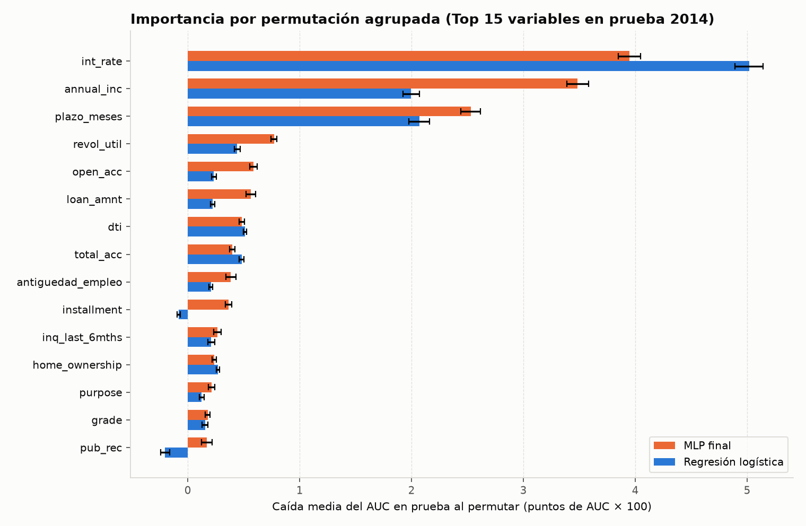
El ordenamiento cuantitativo de las diez variables más influyentes y su contraste con las hipótesis \(H_1\)–\(H_5\) se resumen en la Tabla 14 (donde la tabla y la Figura 16 reportan \(\Delta\text{AUC} \times 100\) para facilitar la lectura visual, mientras que el texto siguiente cita las caídas en su escala decimal original \(\Delta\text{AUC} \in [0, 1]\)).
| Pos. | Variable original |
Cols. | \(\Delta\text{AUC} \times 100\) (MLP) |
\(\Delta\text{AUC} \times 100\) (Logística) |
Conexión con hipótesis y lectura financiera |
|---|---|---|---|---|---|
| 1 | int_rate |
1 | 3,95 ± 0,10 | 5,02 ± 0,13 | Confirma \(H_1\) (Calificación de riesgo y tasa de interés): predictor #1 en ambos
modelos; absorbe la señal continua de grade.
|
| 2 | annual_inc |
2 | 3,48 ± 0,10 | 1,99 ± 0,07 | Confirma \(H_2\) (Capacidad de pago y carga financiera): el MLP extrae +75 % más señal no lineal del ingreso que la regresión logística. |
| 3 | plazo_meses |
1 | 2,53 ± 0,09 | 2,07 ± 0,09 | Confirma \(H_4\) (Condiciones del contrato: plazo y propósito): la duración (36 vs. 60 m) es el tercer pilar de riesgo. |
| 4 | revol_util |
2 | 0,77 ± 0,03 | 0,44 ± 0,03 | Confirma \(H_3\) (Estrés de liquidez rotativa y alertas del buró): la saturación del cupo revolvente casi duplica su aporte en el MLP. |
| 5 | open_acc |
2 | 0,58 ± 0,03 | 0,23 ± 0,02 | Interacción con el número de líneas abiertas y exposición crediticia activa. |
| 6 | loan_amnt |
1 | 0,56 ± 0,04 | 0,22 ± 0,02 | El MLP combina monto solicitado, ingreso y plazo para medir esfuerzo de pago. |
| 7 | dti |
1 | 0,48 ± 0,03 | 0,51 ± 0,01 | Confirma \(H_2\) (Capacidad de pago y carga financiera): carga de deuda mensual consistente en ambos modelos. |
| 8 | total_acc |
2 | 0,40 ± 0,02 | 0,48 ± 0,02 | Profundidad del historial crediticio como amortiguador del riesgo. |
| 9 | antiguedad_ |
2 | 0,38 ± 0,05 | 0,21 ± 0,02 | Coherente con \(H_5\) (Verificación de ingresos, antigüedad laboral y vivienda): su poder predictivo proviene del indicador de dato faltante. |
| 10 | installment |
1 | 0,36 ± 0,03 | −0,08 ± 0,01 | El MLP aprovecha la cuota mensual sin sufrir la colinealidad lineal con
loan_amnt.
|
Aunque la ganancia global del MLP frente a la regresión logística es mínima en magnitud (\(+0,0055\) en el AUC medio de 30 semillas y \(+0,0082\) en la semilla seleccionada, de \(0,6820\) a \(0,6902\)), el contraste entre la Tabla 14 y las hipótesis de la Sección 5.1 explica de dónde proviene esa ligera ventaja (expresando cada caída \(\Delta\text{AUC}\) en su escala decimal real \([0, 1]\)):
- Redistribución de la señal más allá de la tasa de interés — \(H_1\) (Calificación de riesgo y
tasa de interés) y \(H_2\) (Capacidad de pago y carga financiera): La regresión logística
concentra su capacidad predictiva en
int_rate(\(\Delta\text{AUC} = 0,0502\) frente a \(0,0395\) en el MLP), mientras aprovecha menos variables con asimetría extrema comoannual_inc(\(\Delta\text{AUC} = 0,0199\)). Gracias a su capa oculta con activación ReLU, el MLP captura el efecto no lineal y saturado del ingreso anual (\(\Delta\text{AUC} = 0,0348\)) y sus interacciones conloan_amnt(\(0,0056\) vs. \(0,0022\)) einstallment(\(0,0036\) vs. \(-0,0008\)). Notablemente,gradeocupa el puesto 14 (\(\Delta\text{AUC} = 0,0018\) en MLP y \(0,0015\) en logística) porque, una vez condicionada la predicción en la variable continuaint_rate, la letra del grado aporta solo un ajuste fino. - Confirmación multivariada de \(H_3\) (Estrés de liquidez rotativa y alertas del buró),
\(H_4\) (Condiciones del contrato: plazo y propósito) y de la refutación parcial de \(H_5\)
(Verificación
de ingresos, antigüedad laboral y vivienda): El plazo en meses (
plazo_meses, #3 con \(\Delta\text{AUC} = 0,0253\)) y la utilización revolvente (revol_util, #4 con \(\Delta\text{AUC} = 0,0077\)) ratifican las hipótesis \(H_4\) (Condiciones del contrato: plazo y propósito) y \(H_3\) (Estrés de liquidez rotativa y alertas del buró). Por su parte, los tres componentes de \(H_5\) (Verificación de ingresos, antigüedad laboral y vivienda) reproducen exactamente el diagnóstico descriptivo: la verificación de ingresos (verification_status) termina en el último lugar (#21, \(\Delta\text{AUC} = 0,0001\)) porque su correlación cruda positiva con el incumplimiento era un efecto de selección ya explicado por monto y tasa; en cambio,antiguedad_empleo(#9, \(\Delta\text{AUC} = 0,0038\)) yhome_ownership(#12, \(\Delta\text{AUC} = 0,0024\)) sí aportan señal genuina a través del indicador de empleo faltante (\(-2,15\) puntos en la scorecard) y la tenencia de hipoteca (\(+2,39\) puntos en la scorecard).
Pérdida dado incumplimiento
Parte 2 · Regresión
Definición de la variable objetivo
El LGD es la fracción de la deuda pendiente que se pierde después del proceso de cobro. Se construye con campos del conjunto de datos a partir de la exposición al momento del incumplimiento definida en la Ecuación 24:
A partir de esta exposición, la severidad neta de recuperación se calcula mediante la Ecuación 25:
Se usan solo los créditos castigados2Charged Off: crédito declarado incobrable y enviado a cobranza, según el diccionario de LendingClub. Las recuperaciones se registran después del castigo.. Los créditos en Default o Late (31-120 days) cuentan como malos para la PD, pero no tienen cobranza registrada y su LGD saldría igual a 1 por construcción. Los campos utilizados en el cálculo del LGD y su justificación técnica se especifican en la Tabla 15.
| Campo | Definición en el diccionario | Motivo |
|---|---|---|
funded_amnt |
Total amount committed to that loan | Lo desembolsado; se prefiere a loan_amnt y
funded_.
|
total_ |
Principal received to date | Capital devuelto antes del incumplimiento. |
recoveries |
Post charge off gross recovery | Lo cobrado después del castigo. |
collection_ |
Post charge off collection fee | Se resta porque lo retiene la agencia de cobranza. |
De los 46 009 créditos castigados, 38 casos con LGD menor que 0 se llevaron a 0 y ninguno superó 1. La media es 0,930 y la mediana 0,981: el 47 % de los Charged Off no recuperó nada, así que su LGD es exactamente 1.
Modelos y presupuesto de búsqueda
Se comparan una regresión lineal y un MLP (Ospina Arango, 2026) con salida sigmoide, que mantiene la predicción en \([0, 1]\). La red usa entropía cruzada binaria con objetivo fraccional (fractional logit; Papke y Wooldridge, 1996) y el optimizador Adam (Kingma y Ba, 2015).
Regresión lineal
- Parámetros
- 55
- Configuraciones
- 1
- Tiempo de ajuste
- 0,04 s
MLP (64-32-16, tanh)
- Parámetros
- 6 145
- Configuraciones
- 40
- Búsqueda
- 237,5 s
- 30 semillas
- 108,9 s
La mejor configuración del perceptrón multicapa de LGD seleccionada según el RMSE de validación se detalla en la Tabla 16.
| Hiperparámetro | Valor |
|---|---|
| Capas ocultas | 64 · 32 · 16 |
| Activación | tanh |
| Dropout | 0,1 |
| Función de pérdida | Entropía cruzada binaria |
| Optimizador | Adam |
| Tasa de aprendizaje | 0,00365 |
| Penalización L2 | 2,89 × 10⁻⁵ |
| Tamaño de lote | 128 |
La evolución de la pérdida de entrenamiento y validación por época del MLP de LGD se muestra en la Figura 17.

Evaluación: MAE, RMSE y distribución
Las métricas MAE y RMSE obtenidas por la regresión lineal y el MLP en el conjunto de prueba se comparan en la Tabla 17.
| Modelo | Parámetros | MAE | RMSE |
|---|---|---|---|
| Regresión lineal | 55 | 0,0758 | 0,0858 |
| MLP (media de 30 semillas) |
6 145 | 0,0762 | 0,0855 |
La variabilidad del MLP de LGD a lo largo de las 30 semillas independientes en entrenamiento, validación y prueba se reporta en la Tabla 18.
| Conjunto | Métrica | Media | Desv. est. |
Mejor | Peor |
|---|---|---|---|---|---|
| Entrenamiento | MAE | 0,0729 | 0,0006 | 0,0716 | 0,0744 |
| Entrenamiento | RMSE | 0,1155 | 0,0003 | 0,1148 | 0,1161 |
| Validación | MAE | 0,0755 | 0,0002 | 0,0750 | 0,0759 |
| Validación | RMSE | 0,0923 | 0,0001 | 0,0922 | 0,0924 |
| Prueba | MAE | 0,0762 | 0,0005 | 0,0748 | 0,0773 |
| Prueba | RMSE | 0,0855 | 0,0005 | 0,0841 | 0,0864 |
La distribución del LGD observado frente a las predicciones de la red neuronal en prueba se puede observar en la Figura 18.

A continuación, la calibración por deciles del LGD en prueba para la regresión lineal de referencia se observa en la Figura 19.

Por su parte, la calibración por deciles del LGD en prueba obtenida por el perceptrón multicapa se presenta en la Figura 20.
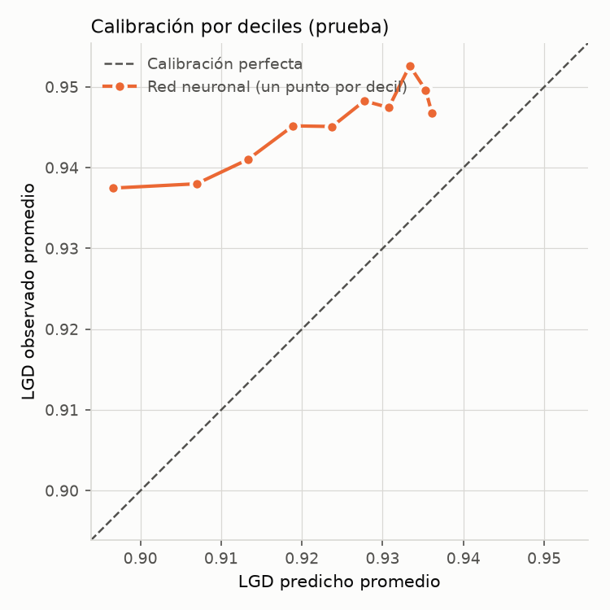
Pérdida esperada
PD × LGD × EAD
Para cada crédito de prueba se combinan las estimaciones de ambas partes mediante la Ecuación 26 (instanciación operativa de la Ecuación 1):
La EAD por defecto es el monto desembolsado multiplicado por la fracción promedio que seguía pendiente al
incumplir, estimada en los castigados de entrenamiento y separada por plazo: 0,601 para 36 meses y 0,749
para 60 meses. Es coherente con la definición del LGD. Al integrar las probabilidades definitivas del
MLP final de la Parte 1 (intercambio/pd_prueba.csv, semilla 17) con las
predicciones de severidad de la red neuronal de la Parte 2, la pérdida esperada total del
portafolio de prueba asciende a US$ 154 013 735 (\(14,51\,\%\) del monto desembolsado),
cerrando en \(+\text{US\$ } 12,81\text{ millones}\) la brecha respecto al cálculo preliminar que usaba la
regresión logística provisional y ubicándose a solo un \(8,4\,\%\) de la cota inferior observada en los
créditos castigados (US$ 168 195 586). El comparativo consolidado de pérdida esperada frente a pérdida
observada se muestra en la Tabla 19.
| Indicador | Valor |
|---|---|
| Créditos de prueba | 74 154 |
| Monto desembolsado (US$) | 1 061 569 725 |
Pérdida esperada total (US$)mlp_final × red_lgd |
154 013 735 (14,51 % del monto) |
| Pérdida observada, cota inferior Solo Charged Off (US$) |
168 195 586 (15,84 % del monto) |
| Pérdida observada, cota superior + Default y Late con LGD = 1 (US$) |
229 530 555 (21,62 % del monto) |
| PD media predicha ( mlp_final) |
0,2152 (21,52 %) |
| Tasa real de malos observada | 0,2622 (26,22 %) |
| LGD medio predicho ( red_lgd) |
0,9226 (92,26 %) |
La calibración de la pérdida esperada frente a la pérdida observada por deciles de riesgo en prueba se puede observar en la Figura 21.

Comparación justa
La Tabla 20 consolida la auditoría de paridad experimental en ambas tareas.
| Tarea | Modelo | Parám. | Configs. | Semillas | Tiempo total |
Desempeño en prueba (2014) |
|---|---|---|---|---|---|---|
| PD | Regresión logística (\(L_2, C=0,01\)) |
55 | 7 (rejilla \(C\)) |
— (convexo) |
5,5 s | AUC: 0,6820 KS: 26,51 % Brier: 0,1831 |
| PD | MLP (54–64–1, ReLU, SGD) |
3 585 | 30 (aleatoria) |
30 (1 a 30) |
817,5 s + 474,5 s |
AUC: 0,6875 ± 0,0025 Sem. 17: 0,6902 · KS: 27,73 % Brier: 0,1792 |
| LGD | Regresión lineal (OLS recortada) |
55 | 1 | — (cerrado) |
0,04 s | RMSE: 0,0858 MAE: 0,0758 |
| LGD | MLP (54–64–32–16–1, tanh, Adam) |
6 145 | 40 (aleatoria) |
30 (1 a 30) |
237,5 s + 108,9 s |
RMSE: 0,0855 ± 0,0005 MAE: 0,0762 ± 0,0005 |
Discusión
¿Qué aportó la red neuronal en cada tarea?
El contraste empírico entre las dos partes del trabajo muestra que la utilidad de un perceptrón multicapa sobre datos tabulares depende críticamente de la estructura de la señal disponible en el momento de la originación:
- En Probabilidad de Incumplimiento (Parte 1 · PD), la red neuronal supera de forma consistente a
la
regresión logística, pero la diferencia práctica es mínima: Con \(3\,585\) parámetros (una sola
capa oculta de 64 neuronas con ReLU), el MLP supera a la regresión logística regularizada (\(55\)
parámetros) en las 30 semillas evaluadas (rango de AUC en prueba de \([0,6822;\; 0,6905]\), con media
\(0,6875 \pm 0,0025\), frente a \(0,6820\) del modelo lineal). Sin embargo, la ventaja promedio es de
apenas \(+0,0055\) en AUC (y \(+0,0082\) en la semilla 17: \(0,6902\) vs. \(0,6820\)), \(+0,0164\) en
Gini (\(0,3804\) vs. \(0,3640\)), \(+1,23\) puntos porcentuales en KS (\(27,73\,\%\) vs. \(26,51\,\%\);
\(+0,0123\) en escala \([0, 1]\)) y una reducción del error de calibración esperado (ECE) de \(6,45\,\%\)
a \(4,74\,\%\). Aunque el análisis de importancia por permutación muestra que esa ligera diferencia
proviene
de capturar relaciones no lineales y de saturación en el ingreso anual (
annual_inc: \(\Delta\text{AUC} = 0,0348\) en el MLP frente a \(0,0199\) en la logística) y su interacción con el monto, la cuota y el plazo, resulta exigua frente al costo de multiplicar por \(65\) los parámetros, incrementar el tiempo total de entrenamiento (\(817,5\text{ s}\) de búsqueda y \(15,8\text{ s}\) por corrida frente a \(0,65\text{ s}\) de la regresión logística) y perder la descomposición aditiva exacta por variable en la scorecard. En consecuencia, para un entorno bancario que priorice simplicidad y explicabilidad directa, la regresión logística ofrece un desempeño prácticamente equivalente. - En Pérdida Dado Incumplimiento (Parte 2 · LGD), el margen de mejora sobre el modelo lineal es marginal: El MLP de tres capas ocultas (\(6\,145\) parámetros) reduce el RMSE de prueba apenas de \(0,0858\) (regresión lineal) a \(0,0855 \pm 0,0005\). Esto no es una falla del algoritmo de optimización, sino una consecuencia estructural del negocio de crédito de consumo sin garantía: al no existir colateral hipotecario ni prendario, la recuperación post castigo depende de gestiones externas de cobranza que ocurren años después del desembolso y que son casi ortogonales a las 21 variables medidas al originar, concentrando el \(47\,\%\) de los créditos castigados exactamente en \(\text{LGD} = 1,0\).
Hipótesis: confirmadas y no confirmadas
El ciclo completo entre el análisis descriptivo sobre entrenamiento (Sección 5.1) y la interpretabilidad multivariada sobre prueba (Sección 5.6) arrojó veredictos coherentes en las cinco hipótesis planteadas:
- \(H_1\) (Calificación de riesgo y tasa de interés — Confirmada): La tasa de
incumplimiento se multiplica por más de seis veces entre el grado
A(\(6,66\,\%\)) y el gradoG(\(40,15\,\%\)). En los modelos multivariados,int_ratees el predictor #1 absoluto (\(\Delta\text{AUC} = 0,0395\) en MLP y \(0,0502\) en logística) y absorbe la mayor parte de la variación discreta degrade. - \(H_2\) (Capacidad de pago y carga financiera — Confirmada): Menores ingresos anuales y
mayores razones deuda/ingreso elevan monótonamente la mora. Además,
annual_incse convierte en la segunda variable más importante de la red neuronal (\(\Delta\text{AUC} = 0,0348\) frente a \(0,0199\) en logística) y en el mayor factor protector de la scorecard aditiva (\(+11,35\) puntos por desviación estándar). - \(H_3\) (Estrés de liquidez rotativa y alertas del buró — Confirmada): La utilización
del cupo revolvente (
revol_util) es la cuarta variable más influyente del MLP (\(\Delta\text{AUC} = 0,0077\)), seguida por las consultas en los últimos 6 meses (inq_last_6mths, \(-4,69\) puntos por desviación estándar en la scorecard). - \(H_4\) (Condiciones del contrato: plazo y propósito — Confirmada): El plazo de 60
frente a 36 meses (
plazo_meses) es el tercer predictor global del MLP (\(\Delta\text{AUC} = 0,0253\)), mientras que los créditos para pequeña empresa (purpose = small_business) registran la tasa de mora más alta (\(28,02\,\%\)) y el mayor castigo puntual de la scorecard (\(-16,59\) puntos). - \(H_5\) (Verificación de ingresos, antigüedad laboral y vivienda — Refutada
parcialmente): Se refutó que estar verificado (
verification_status = Verified) reduzca el riesgo bruto (\(19,42\,\%\) vs. \(13,70\,\%\) en no verificados), revelando un sesgo de selección operativa donde Lending Club verifica con mayor frecuencia solicitudes de mayor monto y tasa; por ello, una vez controlado el resto de variables,verification_statustiene importancia prácticamente nula (#21, \(\Delta\text{AUC} = 0,0001\)). También se refutó que la antigüedad laboral reduzca linealmente la mora entre 1 y 10+ años, pero se confirmó que la ausencia del dato (Sin dato: \(21,33\,\%\) de mora y \(-2,15\) puntos en la scorecard) constituye una señal de alerta genuina.
Aprendizajes sobre el problema
- La partición temporal exige auditar el ciclo de maduración de los contratos: Dividir por fecha de originación evita mirar el futuro, pero en carteras con plazos de 36 y 60 meses induce censura selectiva por la derecha en las cohortes recientes (2013–2014). Sin el diagnóstico de la Sección 3.3, la brecha entre la PD predicha (\(21,52\,\%\)) y la tasa observada en los préstamos cerrados de 2014 (\(26,22\,\%\)) se habría malinterpretado como un defecto del modelo y no como el efecto matemático de excluir el \(46,6\,\%\) de préstamos sanos que seguían Current.
- En datos tabulares financieros, más capacidad no equivale a mejor generalización: Una
red superficial de una capa oculta (
54–64–1, \(3\,585\) parámetros) superó consistentemente a arquitecturas profundas de hasta \(15\,361\) parámetros en PD, mientras que en LGD ningún incremento de complejidad logró vencer la ausencia de variables de garantías o de gestión de cobranza. - El acoplamiento PD × LGD × EAD demuestra el impacto financiero de la calibración: Sustituir la PD provisional de la regresión logística (\(19,77\,\%\)) por la del MLP final (\(21,52\,\%\)) incrementó la reserva de pérdida esperada del portafolio de prueba de US$ 141,21 millones a US$ 154,01 millones, reduciendo sustancialmente la subestimación frente a las pérdidas materializadas en la cartera de 2014.
Uso de inteligencia artificial y flujo de trabajo
Metodología iterativa con agente de código y doble modelo
En lugar de delegar todo el proyecto en un único «super-prompt» monolítico, el equipo trabajó mediante un agente de código integrado al repositorio local bajo un esquema estrictamente incremental y supervisado paso a paso, combinando modelos según la complejidad de cada etapa:
- Solicitud acotadaCada tarea se planteó de forma modular y puntual, sin mezclar objetivos en un mismo mensaje.
- Plan en artefacto (.md)Un modelo de mayor capacidad de razonamiento analizó los archivos y redactó el plan técnico antes de editar código.
- Auditoría y aclaracionesEl equipo revisó cada artefacto, pidió explicaciones detalladas sobre lo hecho y otorgó visto bueno explícito.
- Ejecución y verificaciónUn modelo más básico ejecutó el plan aprobado y corrió las pruebas en Python y navegador real.
- Construcción paso a paso sin super-prompts: Cada componente —auditoría de fugas y censura, análisis descriptivo, modelos de referencia y redes neuronales, scorecard, aplicación web y redacción del informe— se desarrolló en iteraciones cortas, verificables y reversibles.
- Doble modelo y revisión en artefactos: Para planificar arquitecturas, derivaciones y
correcciones se utilizó un modelo de mayor razonamiento que plasmaba el diseño en un
artefacto
.md; tras la revisión y aprobación manual del equipo, la implementación mecánica se delegaba a un modelo más básico. - Aclaraciones continuas y documentación en
.md: De forma constante se pidió al agente explicar qué modificó, justificar conceptos técnicos (optimizadores Adam y SGD, papel de las particiones, derivación y anclaje de la scorecard, escalas de métricas) y generar documentación persistente en archivos Markdown del repositorio (comoplan_de_trabajo_y_ruta.md,explicacion_problema.md,analisis_y_auditoria_particion.mdehipotesis_riesgo_resultados.md).
Principales prompts e impacto en el resultado final: Los mensajes más frecuentes se centraron en exigir reglas estrictas antifuga en el preprocesamiento, separar la teoría matemática pura de los datos del problema en el marco teórico, reemplazar prosa densa por tablas legibles sin desbordamiento, cuestionar inconsistencias numéricas y verificar la aplicación web sin servidor. Esta dinámica aceleró la ingeniería reproducible del repositorio, pero el resultado final dependió directamente de la supervisión crítica humana: revisar cada plan y pedir cuentas permitió corregir a tiempo inconsistencias de escala en \(\Delta\text{AUC}\), asimetrías en tablas, afirmaciones exageradas sobre la ventaja del MLP frente a la regresión logística y fallos de ejecución local en la calculadora web.
Cacería de la alucinación
Durante el desarrollo iterativo del proyecto con agentes de IA se auditaron los planes, el código, el aplicativo interactivo y la redacción técnica. A continuación se documentan cinco hallazgos genuinos en tres categorías del enunciado (Matemáticas, Conceptos y Código), cada uno acompañado de la captura exacta de evidencia tomada del proceso real de verificación.
Hallazgo 1 · Mala escala y comparación de resultados (AUC y Gini) Matemáticas
- Prompt / idea
- Se solicitó al modelo redactar la comparación entre los resultados obtenidos por la regresión logística y la red neuronal multicapa (MLP) en el conjunto de prueba.
- Respuesta de la IA
- La IA parametrizó de forma incorrecta la escala de las diferencias (\(\Delta\)): presentó el paso de \(\text{AUC} = 0,6820\) a \(0,6902\) como «\(+0,82\) puntos de AUC» y el de Gini de \(0,3640\) a \(0,3804\) como «\(+1,64\) puntos», aparentando una ganancia mucho mayor a la real cuando la diferencia efectiva es mínima (\(+0,0082\) en AUC y \(+0,0164\) en Gini).
- Cómo se sospechó
- Al contrastar directamente la resta aritmética entre las métricas de AUC y Gini de la regresión logística y la red neuronal frente a la magnitud de los deltas reportados en el párrafo.
- Evidencia
- Captura original del fragmento redactado por la IA en la Sección 5.4, donde se mezcla la escala decimal \([0, 1]\) con diferencias multiplicadas implícitamente por 100.
-
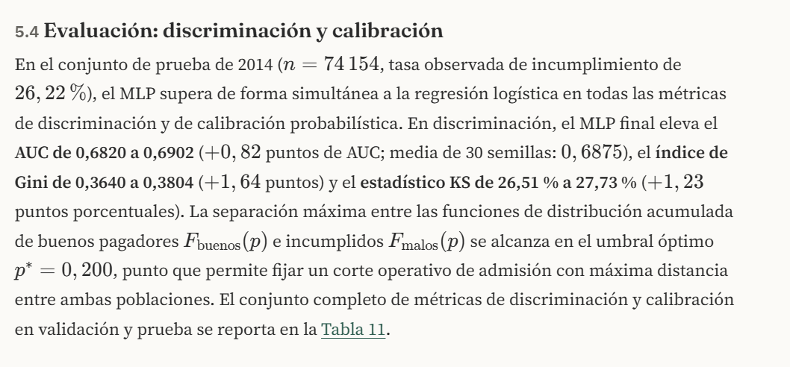
- Corrección
- Se señaló explícitamente a la IA que el delta real era muy pequeño (del orden de milésimas y centésimas en escala \([0, 1]\)) y se corrigió la redacción para expresar todas las diferencias en la misma escala decimal de las métricas.
- Lección aprendida
- Comprobar siempre la coherencia de unidades y escalas en las diferencias (\(\Delta\)) que redacta la IA antes de aprobar tablas o párrafos comparativos.
Hallazgo 2 · Errores de escala y conclusiones sobre la regresión logística frente a la red neuronal Conceptos
- Prompt / idea
- Se utilizó el agente de código para redactar la interpretación de variables y las conclusiones finales del proceso, evaluando si convenía utilizar la red neuronal multicapa frente al modelo de baja complejidad (regresión logística).
- Respuesta de la IA
- Al repetir el problema de escala en las diferencias —como reportar \(\Delta\text{AUC} = 5,02\) puntos o \(3,48\) puntos cuando los valores reales estaban en centésimas (\(0,0502\) y \(0,0348\))— y exagerar la superioridad del MLP, el agente generó ruido frente a una conclusión clara del trabajo: la diferencia entre el modelo de baja complejidad y la red neuronal es mínima (\(+0,0055\) en el AUC medio de 30 semillas y \(+0,0082\) en el mejor modelo, a costa de \(65\times\) más parámetros), por lo que en este problema la red neuronal no representa una ventaja decisiva.
- Cómo se sospechó
- Al examinar críticamente las conclusiones propuestas por la IA y notar afirmaciones como \(\Delta\text{AUC} = 5,02\) puntos cuando la caída real en los datos era de apenas centésimas.
- Evidencia
- Capturas exactas del proceso de auditoría: reconocimiento del agente sobre la mezcla de escalas y la ventaja mínima del MLP frente a la regresión logística, junto con el párrafo original alucinado.
-
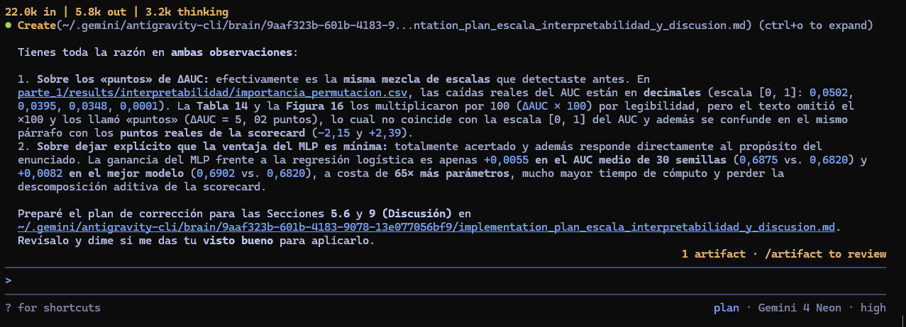
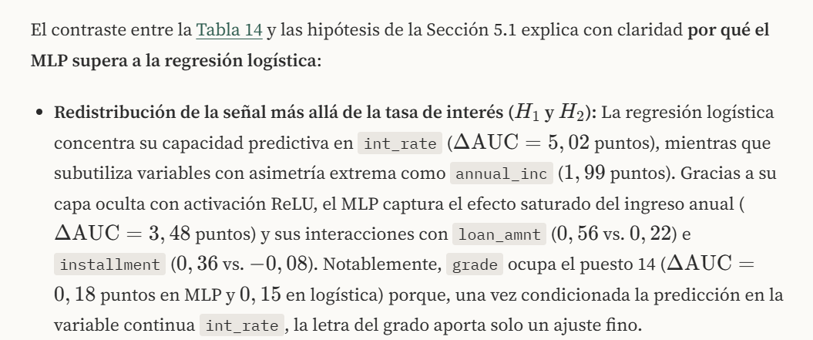
- Corrección
- Se replanteó y corrigió la resta de deltas en su escala decimal correcta y se reescribieron las conclusiones para reflejar fielmente el balance entre el modelo de baja complejidad y la red neuronal al resolver el problema.
- Lección aprendida
- No aceptar conclusiones cualitativas redactadas por la IA sin contrastar primero la magnitud real del efecto frente al incremento en parámetros, costo computacional y pérdida de interpretabilidad.
Hallazgo 3 · Definición no solicitada del «modelo nulo» Conceptos
- Prompt / idea
- En la fase temprana del proyecto, al elaborar el comparativo entre la definición y configuración de hiperparámetros de los dos modelos definidos para resolver el trabajo (modelo de baja complejidad y red neuronal multicapa).
- Respuesta de la IA
- La IA alucinó un requisito inexistente e incorporó por su cuenta un caso extra denominado «modelo nulo», un modelo trivial que no aporta información sustantiva al objetivo del análisis y que no había sido definido en el enunciado del trabajo ni solicitado por el equipo.
- Cómo se sospechó
- Al auditar el texto y las tablas de la documentación, se evidenció que la IA presentaba el modelo nulo como caso base obligatorio para comparar resultados, algo que en ninguna parte se había definido ni solicitado.
- Evidencia
- Captura de la verificación directa contra el enunciado oficial, donde el agente reconoce que el documento del trabajo no exige ningún modelo nulo sino únicamente comparar la regresión logística frente al MLP (Parte 1) y la regresión lineal frente al MLP (Parte 2).
-
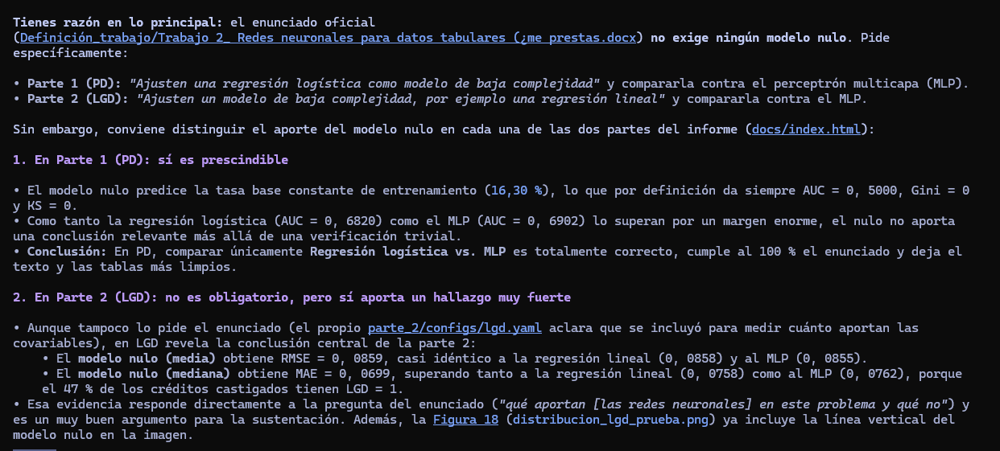
- Corrección
- Se ejecutó la eliminación total del modelo nulo tanto en la Parte 1 como en la Parte 2 del informe web.
- Lección aprendida
- Verificar siempre que cada experimento, tabla o línea base incorporada por la IA responda estrictamente al alcance definido por el equipo y el enunciado, evitando agregados innecesarios.
Hallazgo 4 · Error al ejecutar el aplicativo interactivo de la Scorecard Código
- Prompt / idea
- Construir el aplicativo web interactivo de diseño e implementación de la Scorecard para evaluar si un cliente es apto o no para autorizarle un préstamo a partir de perfiles predeterminados o datos ingresados por el usuario.
- Respuesta de la IA
- La versión inicial generada por la IA fallaba por completo al probarla: al asignar valores o
seleccionar configuraciones predeterminadas no mostraba ningún puntaje efectivo, los controles quedaban
inactivos y el botón de cálculo reiniciaba el formulario (al cargar
app.jscomo módulo ES y depender exclusivamente defetch()bloqueado por CORS en apertura localfile://, sumado a errores de validaciónstepMismatchen los campos numéricos). - Cómo se sospechó
- Al realizar pruebas funcionales (testing) sobre el aplicativo con valores tentativos de un usuario normal y comprobar que no arrojaba ningún puntaje asociado a la información suministrada.
- Evidencia
- Captura de la auditoría de código y de las pruebas posteriores en navegador real, donde se detalla la
causa raíz del bloqueo y la corrección verificada tanto en
file://como enhttp://. -
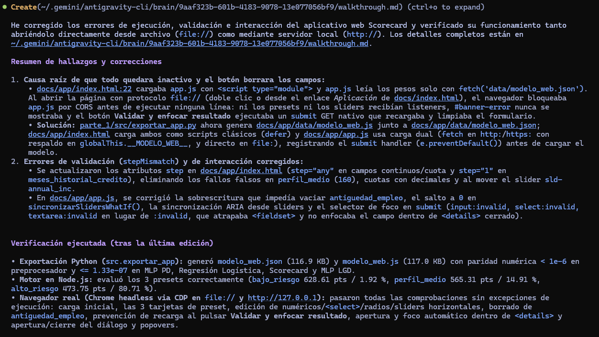
- Corrección
- Se llevó a cabo una auditoría de código con apoyo de la IA para ubicar exactamente el punto donde se
bloqueaba la ejecución; se corrigió la carga de pesos con soporte dual (
modelo_web.jsymodelo_web.json), se ajustaron los atributosstepy la sincronización de los controles, y se comprobó la generación correcta de puntajes para todos los perfiles. - Lección aprendida
- Nunca dar por funcional un aplicativo generado por IA sin realizar pruebas manuales y automatizadas de extremo a extremo en navegador real bajo las condiciones efectivas de ejecución local.
Hallazgo 5 · Definición no solicitada de pruebas estadísticas formales Matemáticas
- Prompt / idea
- Definir y documentar las hipótesis del análisis descriptivo de riesgo (antes de incorporar los resultados de regresión logística y MLP) integrando sus gráficas en el reporte web.
- Respuesta de la IA
- La IA alucinó el alcance de la solicitud al interpretar las hipótesis descriptivas como pruebas de hipótesis estadísticas formales, procediendo por su cuenta a calcular e incluir pruebas como chi-cuadrado (\(\chi^2\)), Mann-Whitney \(U\), correlación de Spearman \(\rho\) y \(p\)-valores, lo cual nunca fue solicitado y añadía complejidad y carga de verificación innecesarias a la documentación.
- Cómo se sospechó
- Durante la revisión editorial de la sección documental generada en el aplicativo web, al leer el texto y detectar pruebas estadísticas formales ajenas al enfoque descriptivo acordado.
- Evidencia
- Captura de la auditoría y simplificación de la Sección 5.1, donde se documenta la eliminación de todas las menciones a \(\chi^2\), Mann-Whitney \(U\), Spearman \(\rho\) y \(p\)-valores.
-
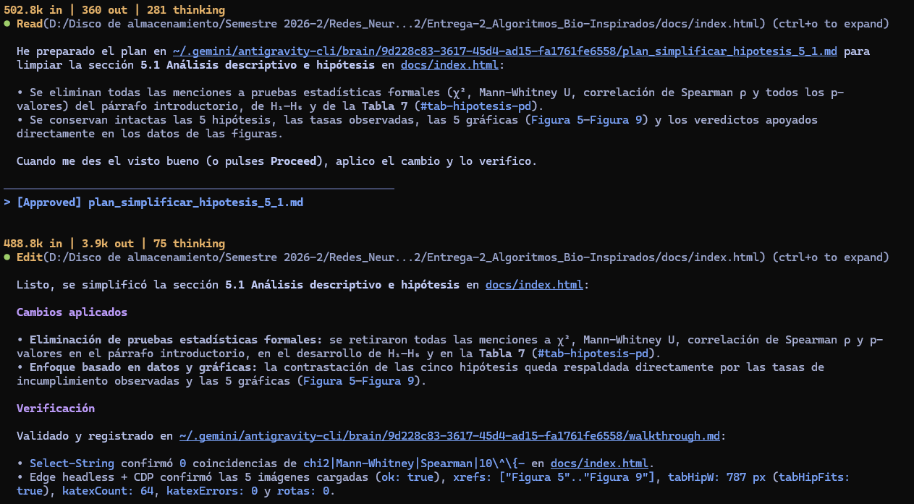
- Corrección
- Se eliminó toda prueba estadística formal calculada para cada hipótesis, manteniendo el enfoque basado en los datos y gráficas expuestas para evitar resultados no verificados y complejidad innecesaria.
- Lección aprendida
- Delimitar explícitamente en cada prompt el alcance metodológico requerido (análisis descriptivo y visual frente a inferencia estadística formal) y leer íntegramente el texto final antes de publicarlo.
Reproducibilidad
Todo el proyecto utiliza un único entorno virtual en Python 3.12 (3.12.2) en
la raíz del repositorio con dependencias fijadas en requirements.txt y semillas aleatorias
explícitas (2026 para búsqueda de hiperparámetros y permutación; semillas 1 a
30 para las corridas independientes de las redes neuronales). Los conjuntos preprocesados
(parte_1/data/processed/pd_*.parquet y parte_2/data/processed/lgd_*.parquet, todos
menores a 3 MB), el preprocesador compartido (preprocesador.joblib), los modelos entrenados,
intercambio/pd_prueba.csv y el paquete dual del aplicativo web
(docs/app/data/modelo_web.json y modelo_web.js) están versionados en el
repositorio, por lo que es posible re-ejecutar cualquier experimento o abrir el aplicativo inmediatamente
tras clonar, sin necesidad de descargar el archivo crudo data/raw/loan.csv (442 MB, excluido en
.gitignore).
La secuencia completa —incluyendo el paso opcional desde el archivo crudo de Kaggle— corresponde exactamente a como se ejecutó el proyecto:
# 0. Instalación de dependencias (desde la raíz del repositorio)
python -m pip install -r requirements.txt
# 1. [Opcional — solo si se descarga data/raw/loan.csv desde Kaggle]
# Auditoría de partición, gráficas de partición, análisis descriptivo y preprocesamiento
python Analisis_del_problema/analisis_particion/auditoria_particion.py
python scripts/graficas_particion.py
python Analisis_del_problema/analisis_descriptivo/descriptivo.py
cd parte_2
python -m src.preprocesamiento --config configs/lgd.yaml
cd ../parte_1
python -m src.preprocesamiento --config configs/pd.yaml
cd ..
# 2. Parte 2: LGD (modelo lineal de referencia y MLP con búsqueda + 30 semillas)
cd parte_2
python -m src.referencia_lgd --config configs/lgd.yaml
python -m src.red_lgd --config configs/lgd.yaml --modo busqueda
python -m src.red_lgd --config configs/lgd.yaml --modo semillas
# 3. Parte 1: PD (regresión logística, MLP con búsqueda + 30 semillas, evaluación, scorecard y permutación)
cd ../parte_1
python -m src.regresion_logistica --config configs/pd.yaml
python -m src.red_neuronal --config configs/pd.yaml --modo busqueda
python -m src.red_neuronal --config configs/pd.yaml --modo semillas
python -m src.evaluacion --config configs/pd.yaml
python -m src.scorecard --config configs/pd.yaml
python -m src.interpretabilidad --config configs/pd.yaml
# 4. Integración de pérdida esperada (E[L] = PD × LGD × EAD) y exportación web dual (JSON + JS)
cd ../parte_2
python -m src.perdida_esperada --config configs/lgd.yaml
cd ../parte_1
python -m src.exportar_app --config configs/pd.yaml
# 5. Servidor local para visualizar el reporte y el simulador de Scorecard (desde la raíz)
cd ..
python -m http.server 8000 --directory docs
# Reporte técnico: http://localhost:8000/ · Aplicativo web: http://localhost:8000/app/Para una demostración en vivo de menos de dos minutos durante la sustentación, cualquier módulo de
modelamiento o evaluación acepta la bandera --demo sin sobrescribir los artefactos finales de
producción. Asimismo, cualquier hiperparámetro, fecha de corte o parámetro de la Scorecard puede modificarse
directamente desde la línea de comandos sin editar código ni archivos YAML mediante --set; por
ejemplo:
python -m src.scorecard --config configs/pd.yaml --set scorecard.pdo=40 --set scorecard.puntaje_base=700
o
python -m src.red_neuronal --config configs/pd.yaml --modo entrenar --set red_neuronal.entrenar.dropout=0.25.
Contribuciones y videos
Referencias
- Kingma, D. P., y Ba, J. (2015). Adam: A method for stochastic optimization. 3rd International Conference on Learning Representations (ICLR 2015). https://arxiv.org/abs/1412.6980
- LendingClub. (s. f.). LCDataDictionary [Diccionario de datos, hoja LoanStats]. Incluido en el conjunto de datos de Kaggle.
- Ospina Arango, J. D. (2026). Redes Neuronales y Algoritmos Bioinspirados: notas y material de clase sobre regresión lineal, regresión logística, redes neuronales y métricas de evaluación [Notas de clase, semestre 2026-02]. Facultad de Minas, Universidad Nacional de Colombia, Sede Medellín.
- Papke, L. E., y Wooldridge, J. M. (1996). Econometric methods for fractional response variables with an application to 401(k) plan participation rates. Journal of Applied Econometrics, 11(6), 619–632. https://doi.org/10.1002/(SICI)1099-1255(199611)11:6<619::AID-JAE418>3.0.CO;2-I
- Ranadeep. (s. f.). Credit risk analysis [Conjunto de datos]. Kaggle. https://www.kaggle.com/datasets/ranadeep/credit-risk-dataset
- Siddiqi, N. (2017). Intelligent credit scoring: Building and implementing better credit risk scorecards (2.ª ed.). John Wiley & Sons. https://doi.org/10.1002/9781119282396